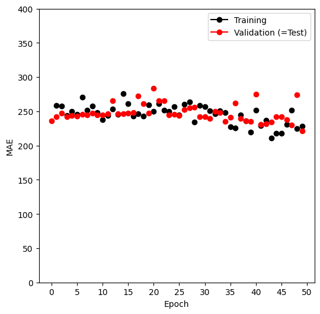
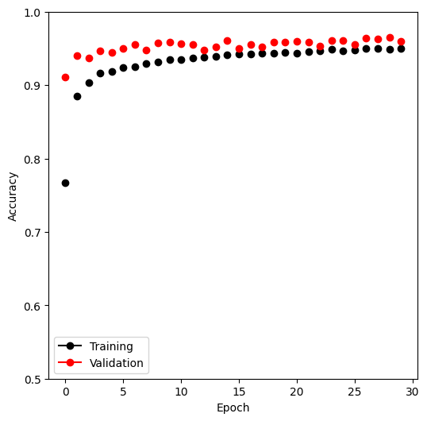
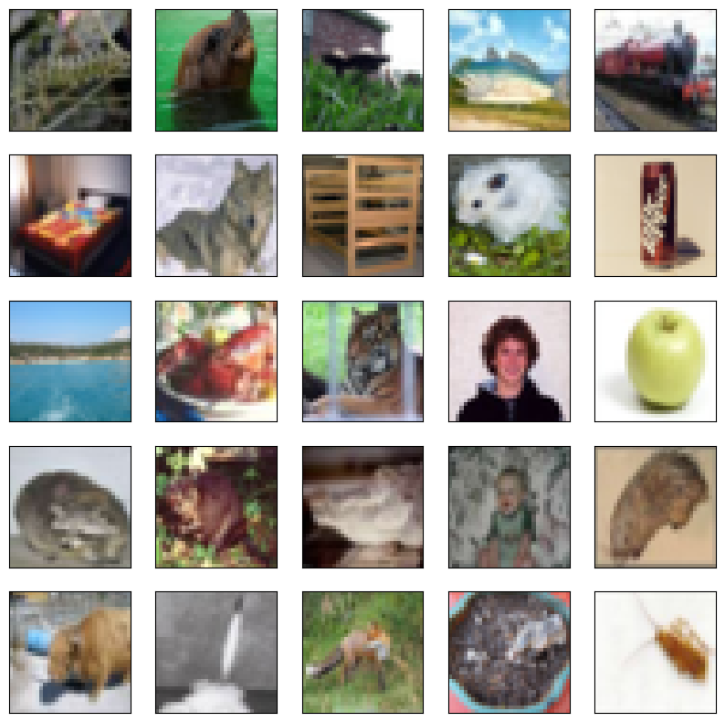
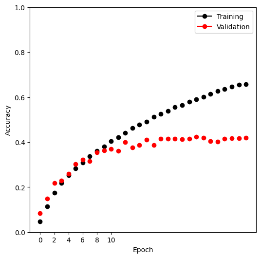
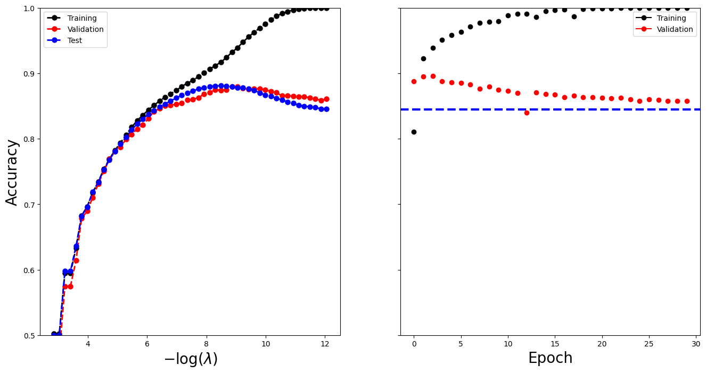
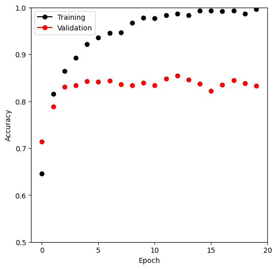

import numpy as np, pandas as pd
from matplotlib.pyplot import subplots
from sklearn.linear_model import \
(LinearRegression,
LogisticRegression,
Lasso)
from sklearn.preprocessing import StandardScaler
from sklearn.model_selection import KFold
from sklearn.pipeline import Pipeline
from ISLP import load_data
from ISLP.models import ModelSpec as MS
from sklearn.model_selection import \
(train_test_split,
GridSearchCV)Deep Learning


In this section we demonstrate how to fit the examples discussed in the text. We use the Python torch package, along with the pytorch_lightning package which provides utilities to simplify fitting and evaluating models. This code can be impressively fast with certain special processors, such as Apple’s new M1 chip. The package is well-structured, flexible, and will feel comfortable to Python users. A good companion is the site pytorch.org/tutorials. Much of our code is adapted from there, as well as the pytorch_lightning documentation. {The precise URLs at the time of writing are https://pytorch.org/tutorials/beginner/basics/intro.html and https://pytorch-lightning.readthedocs.io/en/latest/.}
We start with several standard imports that we have seen before.
Torch-Specific Imports
There are a number of imports for torch. (These are not included with ISLP, so must be installed separately.) First we import the main library and essential tools used to specify sequentially-structured networks.
import torch
from torch import nn
from torch.optim import RMSprop
from torch.utils.data import TensorDatasetThere are several other helper packages for torch. For instance, the torchmetrics package has utilities to compute various metrics to evaluate performance when fitting a model. The torchinfo package provides a useful summary of the layers of a model. We use the read_image() function when loading test images in Section~\(\ref{Ch13-deeplearning-lab:using-pretrained-cnn-models}\).
If you have not already installed the packages torchvision and torchinfo you can install them by running pip install torchinfo torchvision. We can now import from torchinfo.
from torchmetrics import (MeanAbsoluteError,
R2Score)
from torchinfo import summaryThe package pytorch_lightning is a somewhat higher-level interface to torch that simplifies the specification and fitting of models by reducing the amount of boilerplate code needed (compared to using torch alone).
from pytorch_lightning import Trainer
from pytorch_lightning.loggers import CSVLoggerIn order to reproduce results we use seed_everything(). We will also instruct torch to use deterministic algorithms where possible.
from pytorch_lightning import seed_everything
seed_everything(0, workers=True)
torch.use_deterministic_algorithms(True, warn_only=True)Seed set to 0We will use several datasets shipped with torchvision for our examples: a pretrained network for image classification, as well as some transforms used for preprocessing.
from torchvision.io import read_image
from torchvision.datasets import MNIST, CIFAR100
from torchvision.models import (resnet50,
ResNet50_Weights)
from torchvision.transforms import (Resize,
Normalize,
CenterCrop,
ToTensor)We have provided a few utilities in ISLP specifically for this lab. The SimpleDataModule and SimpleModule are simple versions of objects used in pytorch_lightning, the high-level module for fitting torch models. Although more advanced uses such as computing on graphical processing units (GPUs) and parallel data processing are possible in this module, we will not be focusing much on these in this lab. The ErrorTracker handles collections of targets and predictions over each mini-batch in the validation or test stage, allowing computation of the metric over the entire validation or test data set.
from ISLP.torch import (SimpleDataModule,
SimpleModule,
ErrorTracker,
rec_num_workers)In addition we have included some helper functions to load the IMDb database, as well as a lookup that maps integers to particular keys in the database. We’ve included a slightly modified copy of the preprocessed IMDb data from keras, a separate package for fitting deep learning models. This saves us significant preprocessing and allows us to focus on specifying and fitting the models themselves.
from ISLP.torch.imdb import (load_lookup,
load_tensor,
load_sparse,
load_sequential)Finally, we introduce some utility imports not directly related to torch. The glob() function from the glob module is used to find all files matching wildcard characters, which we will use in our example applying the ResNet50 model to some of our own images. The json module will be used to load a JSON file for looking up classes to identify the labels of the pictures in the ResNet50 example.
from glob import glob
import jsonSingle Layer Network on Hitters Data
We start by fitting the models in Section~\(\ref{Ch13:sec:when-use-deep}\) on the Hitters data.
Hitters = load_data('Hitters').dropna()
n = Hitters.shape[0]We will fit two linear models (least squares and lasso) and compare their performance to that of a neural network. For this comparison we will use mean absolute error on a validation dataset. \[\begin{equation*} \begin{split} \mbox{MAE}(y,\hat{y}) = \frac{1}{n} \sum_{i=1}^n |y_i-\hat{y}_i|. \end{split} \end{equation*}\] We set up the model matrix and the response.
model = MS(Hitters.columns.drop('Salary'), intercept=False)
X = model.fit_transform(Hitters).to_numpy()
Y = Hitters['Salary'].to_numpy()The to_numpy() method above converts pandas data frames or series to numpy arrays. We do this because we will need to use sklearn to fit the lasso model, and it requires this conversion. We also use a linear regression method from sklearn, rather than the method in Chapter~3 from statsmodels, to facilitate the comparisons.
We now split the data into test and training, fixing the random state used by sklearn to do the split.
(X_train,
X_test,
Y_train,
Y_test) = train_test_split(X,
Y,
test_size=1/3,
random_state=1)Linear Models
We fit the linear model and evaluate the test error directly.
hit_lm = LinearRegression().fit(X_train, Y_train)
Yhat_test = hit_lm.predict(X_test)
np.abs(Yhat_test - Y_test).mean()259.71528833146243Next we fit the lasso using sklearn. We are using mean absolute error to select and evaluate a model, rather than mean squared error. The specialized solver we used in Section~\(\ref{Ch6-varselect-lab:lab-2-ridge-regression-and-the-lasso}\) uses only mean squared error. So here, with a bit more work, we create a cross-validation grid and perform the cross-validation directly.
We encode a pipeline with two steps: we first normalize the features using a StandardScaler() transform, and then fit the lasso without further normalization.
scaler = StandardScaler(with_mean=True, with_std=True)
lasso = Lasso(warm_start=True, max_iter=30000)
standard_lasso = Pipeline(steps=[('scaler', scaler),
('lasso', lasso)])We need to create a grid of values for \(\lambda\). As is common practice, we choose a grid of 100 values of \(\lambda\), uniform on the log scale from lam_max down to 0.01*lam_max. Here lam_max is the smallest value of \(\lambda\) with an all-zero solution. This value equals the largest absolute inner-product between any predictor and the (centered) response. {The derivation of this result is beyond the scope of this book.}
X_s = scaler.fit_transform(X_train)
n = X_s.shape[0]
lam_max = np.fabs(X_s.T.dot(Y_train - Y_train.mean())).max() / n
param_grid = {'lasso__alpha': np.exp(np.linspace(0, np.log(0.01), 100))
* lam_max}Note that we had to transform the data first, since the scale of the variables impacts the choice of \(\lambda\). We now perform cross-validation using this sequence of \(\lambda\) values.
cv = KFold(10,
shuffle=True,
random_state=1)
grid = GridSearchCV(standard_lasso,
param_grid,
cv=cv,
scoring='neg_mean_absolute_error')
grid.fit(X_train, Y_train);We extract the lasso model with best cross-validated mean absolute error, and evaluate its performance on X_test and Y_test, which were not used in cross-validation.
trained_lasso = grid.best_estimator_
Yhat_test = trained_lasso.predict(X_test)
np.fabs(Yhat_test - Y_test).mean()235.67548374780287This is similar to the results we got for the linear model fit by least squares. However, these results can vary a lot for different train/test splits; we encourage the reader to try a different seed in code block 12 and rerun the subsequent code up to this point.
Specifying a Network: Classes and Inheritance
To fit the neural network, we first set up a model structure that describes the network. Doing so requires us to define new classes specific to the model we wish to fit. Typically this is done in pytorch by sub-classing a generic representation of a network, which is the approach we take here. Although this example is simple, we will go through the steps in some detail, since it will serve us well for the more complex examples to follow.
class HittersModel(nn.Module):
def __init__(self, input_size):
super(HittersModel, self).__init__()
self.flatten = nn.Flatten()
self.sequential = nn.Sequential(
nn.Linear(input_size, 50),
nn.ReLU(),
nn.Dropout(0.4),
nn.Linear(50, 1))
def forward(self, x):
x = self.flatten(x)
return torch.flatten(self.sequential(x))The class statement identifies the code chunk as a declaration for a class HittersModel that inherits from the base class nn.Module. This base class is ubiquitous in torch and represents the mappings in the neural networks.
Indented beneath the class statement are the methods of this class: in this case __init__ and forward. The __init__ method is called when an instance of the class is created as in the cell below. In the methods, self always refers to an instance of the class. In the __init__ method, we have attached two objects to self as attributes: flatten and sequential. These are used in the forward method to describe the map that this module implements.
There is one additional line in the __init__ method, which is a call to super(). This function allows subclasses (i.e. HittersModel) to access methods of the class they inherit from. For example, the class nn.Module has its own __init__ method, which is different from the HittersModel.__init__() method we’ve written above. Using super() allows us to call the method of the base class. For torch models, we will always be making this super() call as it is necessary for the model to be properly interpreted by torch.
The object nn.Module has more methods than simply __init__ and forward. These methods are directly accessible to HittersModel instances because of this inheritance. One such method we will see shortly is the eval() method, used to disable dropout for when we want to evaluate the model on test data.
hit_model = HittersModel(X.shape[1])The object self.sequential is a composition of four maps. The first maps the 19 features of Hitters to 50 dimensions, introducing \(50\times 19+50\) parameters for the weights and intercept of the map (often called the bias). This layer is then mapped to a ReLU layer followed by a 40% dropout layer, and finally a linear map down to 1 dimension, again with a bias. The total number of trainable parameters is therefore \(50\times 19+50+50+1=1051\).
The package torchinfo provides a summary() function that neatly summarizes this information. We specify the size of the input and see the size of each tensor as it passes through layers of the network.
summary(hit_model,
input_size=X_train.shape,
col_names=['input_size',
'output_size',
'num_params'])===================================================================================================================
Layer (type:depth-idx) Input Shape Output Shape Param #
===================================================================================================================
HittersModel [175, 19] [175] --
├─Flatten: 1-1 [175, 19] [175, 19] --
├─Sequential: 1-2 [175, 19] [175, 1] --
│ └─Linear: 2-1 [175, 19] [175, 50] 1,000
│ └─ReLU: 2-2 [175, 50] [175, 50] --
│ └─Dropout: 2-3 [175, 50] [175, 50] --
│ └─Linear: 2-4 [175, 50] [175, 1] 51
===================================================================================================================
Total params: 1,051
Trainable params: 1,051
Non-trainable params: 0
Total mult-adds (Units.MEGABYTES): 0.18
===================================================================================================================
Input size (MB): 0.01
Forward/backward pass size (MB): 0.07
Params size (MB): 0.00
Estimated Total Size (MB): 0.09
===================================================================================================================We have truncated the end of the output slightly, here and in subsequent uses.
We now need to transform our training data into a form accessible to torch. The basic datatype in torch is a tensor, which is very similar to an ndarray from early chapters. We also note here that torch typically works with 32-bit (single precision) rather than 64-bit (double precision) floating point numbers. We therefore convert our data to np.float32 before forming the tensor. The \(X\) and \(Y\) tensors are then arranged into a Dataset recognized by torch using TensorDataset().
X_train_t = torch.tensor(X_train.astype(np.float32))
Y_train_t = torch.tensor(Y_train.astype(np.float32))
hit_train = TensorDataset(X_train_t, Y_train_t)We do the same for the test data.
X_test_t = torch.tensor(X_test.astype(np.float32))
Y_test_t = torch.tensor(Y_test.astype(np.float32))
hit_test = TensorDataset(X_test_t, Y_test_t)Finally, this dataset is passed to a DataLoader() which ultimately passes data into our network. While this may seem like a lot of overhead, this structure is helpful for more complex tasks where data may live on different machines, or where data must be passed to a GPU. We provide a helper function SimpleDataModule() in ISLP to make this task easier for standard usage. One of its arguments is num_workers, which indicates how many processes we will use for loading the data. For small data like Hitters this will have little effect, but it does provide an advantage for the MNIST and CIFAR100 examples below. The torch package will inspect the process running and determine a maximum number of workers. {This depends on the computing hardware and the number of cores available.} We’ve included a function rec_num_workers() to compute this so we know how many workers might be reasonable (here the max was 16).
max_num_workers = rec_num_workers()The general training setup in pytorch_lightning involves training, validation and test data. These are each represented by different data loaders. During each epoch, we run a training step to learn the model and a validation step to track the error. The test data is typically used at the end of training to evaluate the model.
In this case, as we had split only into test and training, we’ll use the test data as validation data with the argument validation=hit_test. The validation argument can be a float between 0 and 1, an integer, or a Dataset. If a float (respectively, integer), it is interpreted as a percentage (respectively number) of the training observations to be used for validation. If it is a Dataset, it is passed directly to a data loader.
hit_dm = SimpleDataModule(hit_train,
hit_test,
batch_size=32,
num_workers=min(4, max_num_workers),
validation=hit_test)Next we must provide a pytorch_lightning module that controls the steps performed during the training process. We provide methods for our SimpleModule() that simply record the value of the loss function and any additional metrics at the end of each epoch. These operations are controlled by the methods SimpleModule.[training/test/validation]_step(), though we will not be modifying these in our examples.
hit_module = SimpleModule.regression(hit_model,
metrics={'mae':MeanAbsoluteError()})By using the SimpleModule.regression() method, we indicate that we will use squared-error loss as in (\(\ref{Ch13:eq:4}\)). We have also asked for mean absolute error to be tracked as well in the metrics that are logged.
We log our results via CSVLogger(), which in this case stores the results in a CSV file within a directory logs/hitters. After the fitting is complete, this allows us to load the results as a pd.DataFrame() and visualize them below. There are several ways to log the results within pytorch_lightning, though we will not cover those here in detail.
hit_logger = CSVLogger('logs', name='hitters')Finally we are ready to train our model and log the results. We use the Trainer() object from pytorch_lightning to do this work. The argument datamodule=hit_dm tells the trainer how training/validation/test logs are produced, while the first argument hit_module specifies the network architecture as well as the training/validation/test steps. The callbacks argument allows for several tasks to be carried out at various points while training a model. Here our ErrorTracker() callback will enable us to compute validation error while training and, finally, the test error. We now fit the model for 50 epochs.
hit_trainer = Trainer(deterministic=True,
max_epochs=50,
log_every_n_steps=5,
logger=hit_logger,
callbacks=[ErrorTracker()])
hit_trainer.fit(hit_module, datamodule=hit_dm)GPU available: True (mps), used: True
TPU available: False, using: 0 TPU cores
IPU available: False, using: 0 IPUs
HPU available: False, using: 0 HPUs
| Name | Type | Params
---------------------------------------
0 | model | HittersModel | 1.1 K
1 | loss | MSELoss | 0
---------------------------------------
1.1 K Trainable params
0 Non-trainable params
1.1 K Total params
0.004 Total estimated model params size (MB)Epoch 0: 100%|█████████████████████████████████████████████████████████████████████████████| 6/6 [00:01<00:00, 4.03it/s, v_num=7]
Validation: | | 0/? [00:00<?, ?it/s]
Validation: 0%| | 0/3 [00:00<?, ?it/s]
Validation DataLoader 0: 0%| | 0/3 [00:00<?, ?it/s]
Validation DataLoader 0: 33%|███████████████████████ | 1/3 [00:00<00:00, 834.19it/s]
Validation DataLoader 0: 67%|██████████████████████████████████████████████ | 2/3 [00:00<00:00, 567.56it/s]
Validation DataLoader 0: 100%|█████████████████████████████████████████████████████████████████████| 3/3 [00:00<00:00, 189.22it/s]
Epoch 1: 100%|████████████████████████████████████████████████████████████████████████████| 6/6 [00:00<00:00, 228.62it/s, v_num=7]
Validation: | | 0/? [00:00<?, ?it/s]
Validation: 0%| | 0/3 [00:00<?, ?it/s]
Validation DataLoader 0: 0%| | 0/3 [00:00<?, ?it/s]
Validation DataLoader 0: 33%|███████████████████████ | 1/3 [00:00<00:00, 867.31it/s]
Validation DataLoader 0: 67%|██████████████████████████████████████████████ | 2/3 [00:00<00:00, 690.93it/s]
Validation DataLoader 0: 100%|█████████████████████████████████████████████████████████████████████| 3/3 [00:00<00:00, 571.77it/s]
Epoch 2: 100%|████████████████████████████████████████████████████████████████████████████| 6/6 [00:00<00:00, 231.96it/s, v_num=7]
Validation: | | 0/? [00:00<?, ?it/s]
Validation: 0%| | 0/3 [00:00<?, ?it/s]
Validation DataLoader 0: 0%| | 0/3 [00:00<?, ?it/s]
Validation DataLoader 0: 33%|███████████████████████ | 1/3 [00:00<00:00, 729.44it/s]
Validation DataLoader 0: 67%|██████████████████████████████████████████████ | 2/3 [00:00<00:00, 561.30it/s]
Validation DataLoader 0: 100%|█████████████████████████████████████████████████████████████████████| 3/3 [00:00<00:00, 511.08it/s]
Epoch 3: 100%|████████████████████████████████████████████████████████████████████████████| 6/6 [00:00<00:00, 241.35it/s, v_num=7]
Validation: | | 0/? [00:00<?, ?it/s]
Validation: 0%| | 0/3 [00:00<?, ?it/s]
Validation DataLoader 0: 0%| | 0/3 [00:00<?, ?it/s]
Validation DataLoader 0: 33%|███████████████████████ | 1/3 [00:00<00:00, 671.52it/s]
Validation DataLoader 0: 67%|██████████████████████████████████████████████ | 2/3 [00:00<00:00, 526.59it/s]
Validation DataLoader 0: 100%|█████████████████████████████████████████████████████████████████████| 3/3 [00:00<00:00, 486.92it/s]
Epoch 4: 100%|████████████████████████████████████████████████████████████████████████████| 6/6 [00:00<00:00, 232.41it/s, v_num=7]
Validation: | | 0/? [00:00<?, ?it/s]
Validation: 0%| | 0/3 [00:00<?, ?it/s]
Validation DataLoader 0: 0%| | 0/3 [00:00<?, ?it/s]
Validation DataLoader 0: 33%|███████████████████████ | 1/3 [00:00<00:00, 759.84it/s]
Validation DataLoader 0: 67%|██████████████████████████████████████████████ | 2/3 [00:00<00:00, 562.24it/s]
Validation DataLoader 0: 100%|█████████████████████████████████████████████████████████████████████| 3/3 [00:00<00:00, 531.82it/s]
Epoch 5: 100%|████████████████████████████████████████████████████████████████████████████| 6/6 [00:00<00:00, 225.74it/s, v_num=7]
Validation: | | 0/? [00:00<?, ?it/s]
Validation: 0%| | 0/3 [00:00<?, ?it/s]
Validation DataLoader 0: 0%| | 0/3 [00:00<?, ?it/s]
Validation DataLoader 0: 33%|███████████████████████ | 1/3 [00:00<00:00, 750.19it/s]
Validation DataLoader 0: 67%|██████████████████████████████████████████████ | 2/3 [00:00<00:00, 569.80it/s]
Validation DataLoader 0: 100%|█████████████████████████████████████████████████████████████████████| 3/3 [00:00<00:00, 539.85it/s]
Epoch 6: 100%|████████████████████████████████████████████████████████████████████████████| 6/6 [00:00<00:00, 236.54it/s, v_num=7]
Validation: | | 0/? [00:00<?, ?it/s]
Validation: 0%| | 0/3 [00:00<?, ?it/s]
Validation DataLoader 0: 0%| | 0/3 [00:00<?, ?it/s]
Validation DataLoader 0: 33%|███████████████████████ | 1/3 [00:00<00:00, 784.13it/s]
Validation DataLoader 0: 67%|██████████████████████████████████████████████ | 2/3 [00:00<00:00, 569.96it/s]
Validation DataLoader 0: 100%|█████████████████████████████████████████████████████████████████████| 3/3 [00:00<00:00, 515.63it/s]
Epoch 7: 100%|████████████████████████████████████████████████████████████████████████████| 6/6 [00:00<00:00, 228.05it/s, v_num=7]
Validation: | | 0/? [00:00<?, ?it/s]
Validation: 0%| | 0/3 [00:00<?, ?it/s]
Validation DataLoader 0: 0%| | 0/3 [00:00<?, ?it/s]
Validation DataLoader 0: 33%|███████████████████████ | 1/3 [00:00<00:00, 733.01it/s]
Validation DataLoader 0: 67%|██████████████████████████████████████████████ | 2/3 [00:00<00:00, 567.68it/s]
Validation DataLoader 0: 100%|█████████████████████████████████████████████████████████████████████| 3/3 [00:00<00:00, 536.29it/s]
Epoch 8: 100%|████████████████████████████████████████████████████████████████████████████| 6/6 [00:00<00:00, 238.27it/s, v_num=7]
Validation: | | 0/? [00:00<?, ?it/s]
Validation: 0%| | 0/3 [00:00<?, ?it/s]
Validation DataLoader 0: 0%| | 0/3 [00:00<?, ?it/s]
Validation DataLoader 0: 33%|███████████████████████ | 1/3 [00:00<00:00, 729.44it/s]
Validation DataLoader 0: 67%|██████████████████████████████████████████████ | 2/3 [00:00<00:00, 575.90it/s]
Validation DataLoader 0: 100%|█████████████████████████████████████████████████████████████████████| 3/3 [00:00<00:00, 549.98it/s]
Epoch 9: 100%|████████████████████████████████████████████████████████████████████████████| 6/6 [00:00<00:00, 233.54it/s, v_num=7]
Validation: | | 0/? [00:00<?, ?it/s]
Validation: 0%| | 0/3 [00:00<?, ?it/s]
Validation DataLoader 0: 0%| | 0/3 [00:00<?, ?it/s]
Validation DataLoader 0: 33%|███████████████████████ | 1/3 [00:00<00:00, 695.00it/s]
Validation DataLoader 0: 67%|██████████████████████████████████████████████ | 2/3 [00:00<00:00, 571.28it/s]
Validation DataLoader 0: 100%|█████████████████████████████████████████████████████████████████████| 3/3 [00:00<00:00, 575.69it/s]
Epoch 10: 100%|███████████████████████████████████████████████████████████████████████████| 6/6 [00:00<00:00, 141.10it/s, v_num=7]
Validation: | | 0/? [00:00<?, ?it/s]
Validation: 0%| | 0/3 [00:00<?, ?it/s]
Validation DataLoader 0: 0%| | 0/3 [00:00<?, ?it/s]
Validation DataLoader 0: 33%|███████████████████████ | 1/3 [00:00<00:00, 694.42it/s]
Validation DataLoader 0: 67%|██████████████████████████████████████████████ | 2/3 [00:00<00:00, 514.70it/s]
Validation DataLoader 0: 100%|█████████████████████████████████████████████████████████████████████| 3/3 [00:00<00:00, 477.19it/s]
Epoch 11: 100%|███████████████████████████████████████████████████████████████████████████| 6/6 [00:00<00:00, 211.01it/s, v_num=7]
Validation: | | 0/? [00:00<?, ?it/s]
Validation: 0%| | 0/3 [00:00<?, ?it/s]
Validation DataLoader 0: 0%| | 0/3 [00:00<?, ?it/s]
Validation DataLoader 0: 33%|███████████████████████ | 1/3 [00:00<00:00, 765.80it/s]
Validation DataLoader 0: 67%|██████████████████████████████████████████████ | 2/3 [00:00<00:00, 539.84it/s]
Validation DataLoader 0: 100%|█████████████████████████████████████████████████████████████████████| 3/3 [00:00<00:00, 520.75it/s]
Epoch 12: 100%|███████████████████████████████████████████████████████████████████████████| 6/6 [00:00<00:00, 228.19it/s, v_num=7]
Validation: | | 0/? [00:00<?, ?it/s]
Validation: 0%| | 0/3 [00:00<?, ?it/s]
Validation DataLoader 0: 0%| | 0/3 [00:00<?, ?it/s]
Validation DataLoader 0: 33%|███████████████████████ | 1/3 [00:00<00:00, 717.96it/s]
Validation DataLoader 0: 67%|██████████████████████████████████████████████ | 2/3 [00:00<00:00, 580.04it/s]
Validation DataLoader 0: 100%|█████████████████████████████████████████████████████████████████████| 3/3 [00:00<00:00, 521.74it/s]
Epoch 13: 100%|███████████████████████████████████████████████████████████████████████████| 6/6 [00:00<00:00, 226.32it/s, v_num=7]
Validation: | | 0/? [00:00<?, ?it/s]
Validation: 0%| | 0/3 [00:00<?, ?it/s]
Validation DataLoader 0: 0%| | 0/3 [00:00<?, ?it/s]
Validation DataLoader 0: 33%|███████████████████████ | 1/3 [00:00<00:00, 696.84it/s]
Validation DataLoader 0: 67%|██████████████████████████████████████████████ | 2/3 [00:00<00:00, 577.37it/s]
Validation DataLoader 0: 100%|█████████████████████████████████████████████████████████████████████| 3/3 [00:00<00:00, 550.77it/s]
Epoch 14: 100%|███████████████████████████████████████████████████████████████████████████| 6/6 [00:00<00:00, 235.64it/s, v_num=7]
Validation: | | 0/? [00:00<?, ?it/s]
Validation: 0%| | 0/3 [00:00<?, ?it/s]
Validation DataLoader 0: 0%| | 0/3 [00:00<?, ?it/s]
Validation DataLoader 0: 33%|███████████████████████ | 1/3 [00:00<00:00, 747.38it/s]
Validation DataLoader 0: 67%|██████████████████████████████████████████████ | 2/3 [00:00<00:00, 565.27it/s]
Validation DataLoader 0: 100%|█████████████████████████████████████████████████████████████████████| 3/3 [00:00<00:00, 545.23it/s]
Epoch 15: 100%|███████████████████████████████████████████████████████████████████████████| 6/6 [00:00<00:00, 226.05it/s, v_num=7]
Validation: | | 0/? [00:00<?, ?it/s]
Validation: 0%| | 0/3 [00:00<?, ?it/s]
Validation DataLoader 0: 0%| | 0/3 [00:00<?, ?it/s]
Validation DataLoader 0: 33%|███████████████████████ | 1/3 [00:00<00:00, 540.50it/s]
Validation DataLoader 0: 67%|██████████████████████████████████████████████ | 2/3 [00:00<00:00, 435.73it/s]
Validation DataLoader 0: 100%|█████████████████████████████████████████████████████████████████████| 3/3 [00:00<00:00, 446.16it/s]
Epoch 16: 100%|███████████████████████████████████████████████████████████████████████████| 6/6 [00:00<00:00, 213.13it/s, v_num=7]
Validation: | | 0/? [00:00<?, ?it/s]
Validation: 0%| | 0/3 [00:00<?, ?it/s]
Validation DataLoader 0: 0%| | 0/3 [00:00<?, ?it/s]
Validation DataLoader 0: 33%|███████████████████████ | 1/3 [00:00<00:00, 773.43it/s]
Validation DataLoader 0: 67%|██████████████████████████████████████████████ | 2/3 [00:00<00:00, 628.74it/s]
Validation DataLoader 0: 100%|█████████████████████████████████████████████████████████████████████| 3/3 [00:00<00:00, 582.73it/s]
Epoch 17: 100%|███████████████████████████████████████████████████████████████████████████| 6/6 [00:00<00:00, 231.60it/s, v_num=7]
Validation: | | 0/? [00:00<?, ?it/s]
Validation: 0%| | 0/3 [00:00<?, ?it/s]
Validation DataLoader 0: 0%| | 0/3 [00:00<?, ?it/s]
Validation DataLoader 0: 33%|███████████████████████ | 1/3 [00:00<00:00, 654.44it/s]
Validation DataLoader 0: 67%|██████████████████████████████████████████████ | 2/3 [00:00<00:00, 551.27it/s]
Validation DataLoader 0: 100%|█████████████████████████████████████████████████████████████████████| 3/3 [00:00<00:00, 539.76it/s]
Epoch 18: 100%|███████████████████████████████████████████████████████████████████████████| 6/6 [00:00<00:00, 233.47it/s, v_num=7]
Validation: | | 0/? [00:00<?, ?it/s]
Validation: 0%| | 0/3 [00:00<?, ?it/s]
Validation DataLoader 0: 0%| | 0/3 [00:00<?, ?it/s]
Validation DataLoader 0: 33%|███████████████████████ | 1/3 [00:00<00:00, 767.48it/s]
Validation DataLoader 0: 67%|██████████████████████████████████████████████ | 2/3 [00:00<00:00, 567.56it/s]
Validation DataLoader 0: 100%|█████████████████████████████████████████████████████████████████████| 3/3 [00:00<00:00, 545.35it/s]
Epoch 19: 100%|███████████████████████████████████████████████████████████████████████████| 6/6 [00:00<00:00, 223.37it/s, v_num=7]
Validation: | | 0/? [00:00<?, ?it/s]
Validation: 0%| | 0/3 [00:00<?, ?it/s]
Validation DataLoader 0: 0%| | 0/3 [00:00<?, ?it/s]
Validation DataLoader 0: 33%|███████████████████████ | 1/3 [00:00<00:00, 797.40it/s]
Validation DataLoader 0: 67%|██████████████████████████████████████████████ | 2/3 [00:00<00:00, 647.02it/s]
Validation DataLoader 0: 100%|█████████████████████████████████████████████████████████████████████| 3/3 [00:00<00:00, 599.16it/s]
Epoch 20: 100%|████████████████████████████████████████████████████████████████████████████| 6/6 [00:00<00:00, 76.45it/s, v_num=7]
Validation: | | 0/? [00:00<?, ?it/s]
Validation: 0%| | 0/3 [00:00<?, ?it/s]
Validation DataLoader 0: 0%| | 0/3 [00:00<?, ?it/s]
Validation DataLoader 0: 33%|███████████████████████ | 1/3 [00:00<00:00, 742.88it/s]
Validation DataLoader 0: 67%|██████████████████████████████████████████████ | 2/3 [00:00<00:00, 584.94it/s]
Validation DataLoader 0: 100%|█████████████████████████████████████████████████████████████████████| 3/3 [00:00<00:00, 565.50it/s]
Epoch 21: 100%|███████████████████████████████████████████████████████████████████████████| 6/6 [00:00<00:00, 230.47it/s, v_num=7]
Validation: | | 0/? [00:00<?, ?it/s]
Validation: 0%| | 0/3 [00:00<?, ?it/s]
Validation DataLoader 0: 0%| | 0/3 [00:00<?, ?it/s]
Validation DataLoader 0: 33%|███████████████████████ | 1/3 [00:00<00:00, 763.99it/s]
Validation DataLoader 0: 67%|██████████████████████████████████████████████ | 2/3 [00:00<00:00, 554.33it/s]
Validation DataLoader 0: 100%|█████████████████████████████████████████████████████████████████████| 3/3 [00:00<00:00, 510.46it/s]
Epoch 22: 100%|███████████████████████████████████████████████████████████████████████████| 6/6 [00:00<00:00, 240.44it/s, v_num=7]
Validation: | | 0/? [00:00<?, ?it/s]
Validation: 0%| | 0/3 [00:00<?, ?it/s]
Validation DataLoader 0: 0%| | 0/3 [00:00<?, ?it/s]
Validation DataLoader 0: 33%|███████████████████████ | 1/3 [00:00<00:00, 624.99it/s]
Validation DataLoader 0: 67%|██████████████████████████████████████████████ | 2/3 [00:00<00:00, 554.18it/s]
Validation DataLoader 0: 100%|█████████████████████████████████████████████████████████████████████| 3/3 [00:00<00:00, 514.85it/s]
Epoch 23: 100%|███████████████████████████████████████████████████████████████████████████| 6/6 [00:00<00:00, 239.80it/s, v_num=7]
Validation: | | 0/? [00:00<?, ?it/s]
Validation: 0%| | 0/3 [00:00<?, ?it/s]
Validation DataLoader 0: 0%| | 0/3 [00:00<?, ?it/s]
Validation DataLoader 0: 33%|███████████████████████ | 1/3 [00:00<00:00, 620.37it/s]
Validation DataLoader 0: 67%|██████████████████████████████████████████████ | 2/3 [00:00<00:00, 529.38it/s]
Validation DataLoader 0: 100%|█████████████████████████████████████████████████████████████████████| 3/3 [00:00<00:00, 520.19it/s]
Epoch 24: 100%|███████████████████████████████████████████████████████████████████████████| 6/6 [00:00<00:00, 235.10it/s, v_num=7]
Validation: | | 0/? [00:00<?, ?it/s]
Validation: 0%| | 0/3 [00:00<?, ?it/s]
Validation DataLoader 0: 0%| | 0/3 [00:00<?, ?it/s]
Validation DataLoader 0: 33%|███████████████████████ | 1/3 [00:00<00:00, 780.63it/s]
Validation DataLoader 0: 67%|██████████████████████████████████████████████ | 2/3 [00:00<00:00, 587.03it/s]
Validation DataLoader 0: 100%|█████████████████████████████████████████████████████████████████████| 3/3 [00:00<00:00, 572.73it/s]
Epoch 25: 100%|████████████████████████████████████████████████████████████████████████████| 6/6 [00:00<00:00, 77.30it/s, v_num=7]
Validation: | | 0/? [00:00<?, ?it/s]
Validation: 0%| | 0/3 [00:00<?, ?it/s]
Validation DataLoader 0: 0%| | 0/3 [00:00<?, ?it/s]
Validation DataLoader 0: 33%|███████████████████████ | 1/3 [00:00<00:00, 811.59it/s]
Validation DataLoader 0: 67%|██████████████████████████████████████████████ | 2/3 [00:00<00:00, 631.29it/s]
Validation DataLoader 0: 100%|█████████████████████████████████████████████████████████████████████| 3/3 [00:00<00:00, 531.53it/s]
Epoch 26: 100%|███████████████████████████████████████████████████████████████████████████| 6/6 [00:00<00:00, 228.06it/s, v_num=7]
Validation: | | 0/? [00:00<?, ?it/s]
Validation: 0%| | 0/3 [00:00<?, ?it/s]
Validation DataLoader 0: 0%| | 0/3 [00:00<?, ?it/s]
Validation DataLoader 0: 33%|███████████████████████ | 1/3 [00:00<00:00, 700.80it/s]
Validation DataLoader 0: 67%|██████████████████████████████████████████████ | 2/3 [00:00<00:00, 573.07it/s]
Validation DataLoader 0: 100%|█████████████████████████████████████████████████████████████████████| 3/3 [00:00<00:00, 541.13it/s]
Epoch 27: 100%|███████████████████████████████████████████████████████████████████████████| 6/6 [00:00<00:00, 231.81it/s, v_num=7]
Validation: | | 0/? [00:00<?, ?it/s]
Validation: 0%| | 0/3 [00:00<?, ?it/s]
Validation DataLoader 0: 0%| | 0/3 [00:00<?, ?it/s]
Validation DataLoader 0: 33%|███████████████████████ | 1/3 [00:00<00:00, 697.42it/s]
Validation DataLoader 0: 67%|██████████████████████████████████████████████ | 2/3 [00:00<00:00, 552.68it/s]
Validation DataLoader 0: 100%|█████████████████████████████████████████████████████████████████████| 3/3 [00:00<00:00, 521.92it/s]
Epoch 28: 100%|███████████████████████████████████████████████████████████████████████████| 6/6 [00:00<00:00, 239.59it/s, v_num=7]
Validation: | | 0/? [00:00<?, ?it/s]
Validation: 0%| | 0/3 [00:00<?, ?it/s]
Validation DataLoader 0: 0%| | 0/3 [00:00<?, ?it/s]
Validation DataLoader 0: 33%|███████████████████████ | 1/3 [00:00<00:00, 719.93it/s]
Validation DataLoader 0: 67%|██████████████████████████████████████████████ | 2/3 [00:00<00:00, 607.39it/s]
Validation DataLoader 0: 100%|█████████████████████████████████████████████████████████████████████| 3/3 [00:00<00:00, 575.69it/s]
Epoch 29: 100%|███████████████████████████████████████████████████████████████████████████| 6/6 [00:00<00:00, 236.81it/s, v_num=7]
Validation: | | 0/? [00:00<?, ?it/s]
Validation: 0%| | 0/3 [00:00<?, ?it/s]
Validation DataLoader 0: 0%| | 0/3 [00:00<?, ?it/s]
Validation DataLoader 0: 33%|███████████████████████ | 1/3 [00:00<00:00, 657.52it/s]
Validation DataLoader 0: 67%|██████████████████████████████████████████████ | 2/3 [00:00<00:00, 540.54it/s]
Validation DataLoader 0: 100%|█████████████████████████████████████████████████████████████████████| 3/3 [00:00<00:00, 533.06it/s]
Epoch 30: 100%|███████████████████████████████████████████████████████████████████████████| 6/6 [00:00<00:00, 239.42it/s, v_num=7]
Validation: | | 0/? [00:00<?, ?it/s]
Validation: 0%| | 0/3 [00:00<?, ?it/s]
Validation DataLoader 0: 0%| | 0/3 [00:00<?, ?it/s]
Validation DataLoader 0: 33%|███████████████████████ | 1/3 [00:00<00:00, 127.87it/s]
Validation DataLoader 0: 67%|██████████████████████████████████████████████▋ | 2/3 [00:00<00:00, 54.91it/s]
Validation DataLoader 0: 100%|██████████████████████████████████████████████████████████████████████| 3/3 [00:00<00:00, 60.58it/s]
Epoch 31: 100%|███████████████████████████████████████████████████████████████████████████| 6/6 [00:00<00:00, 189.50it/s, v_num=7]
Validation: | | 0/? [00:00<?, ?it/s]
Validation: 0%| | 0/3 [00:00<?, ?it/s]
Validation DataLoader 0: 0%| | 0/3 [00:00<?, ?it/s]
Validation DataLoader 0: 33%|███████████████████████ | 1/3 [00:00<00:00, 803.97it/s]
Validation DataLoader 0: 67%|██████████████████████████████████████████████ | 2/3 [00:00<00:00, 600.09it/s]
Validation DataLoader 0: 100%|█████████████████████████████████████████████████████████████████████| 3/3 [00:00<00:00, 559.29it/s]
Epoch 32: 100%|███████████████████████████████████████████████████████████████████████████| 6/6 [00:00<00:00, 230.71it/s, v_num=7]
Validation: | | 0/? [00:00<?, ?it/s]
Validation: 0%| | 0/3 [00:00<?, ?it/s]
Validation DataLoader 0: 0%| | 0/3 [00:00<?, ?it/s]
Validation DataLoader 0: 33%|███████████████████████ | 1/3 [00:00<00:00, 777.73it/s]
Validation DataLoader 0: 67%|██████████████████████████████████████████████ | 2/3 [00:00<00:00, 620.55it/s]
Validation DataLoader 0: 100%|█████████████████████████████████████████████████████████████████████| 3/3 [00:00<00:00, 590.91it/s]
Epoch 33: 100%|███████████████████████████████████████████████████████████████████████████| 6/6 [00:00<00:00, 235.73it/s, v_num=7]
Validation: | | 0/? [00:00<?, ?it/s]
Validation: 0%| | 0/3 [00:00<?, ?it/s]
Validation DataLoader 0: 0%| | 0/3 [00:00<?, ?it/s]
Validation DataLoader 0: 33%|███████████████████████ | 1/3 [00:00<00:00, 704.81it/s]
Validation DataLoader 0: 67%|██████████████████████████████████████████████ | 2/3 [00:00<00:00, 573.23it/s]
Validation DataLoader 0: 100%|█████████████████████████████████████████████████████████████████████| 3/3 [00:00<00:00, 540.55it/s]
Epoch 34: 100%|███████████████████████████████████████████████████████████████████████████| 6/6 [00:00<00:00, 239.90it/s, v_num=7]
Validation: | | 0/? [00:00<?, ?it/s]
Validation: 0%| | 0/3 [00:00<?, ?it/s]
Validation DataLoader 0: 0%| | 0/3 [00:00<?, ?it/s]
Validation DataLoader 0: 33%|███████████████████████ | 1/3 [00:00<00:00, 737.91it/s]
Validation DataLoader 0: 67%|██████████████████████████████████████████████ | 2/3 [00:00<00:00, 546.88it/s]
Validation DataLoader 0: 100%|█████████████████████████████████████████████████████████████████████| 3/3 [00:00<00:00, 557.73it/s]
Epoch 35: 100%|███████████████████████████████████████████████████████████████████████████| 6/6 [00:00<00:00, 227.41it/s, v_num=7]
Validation: | | 0/? [00:00<?, ?it/s]
Validation: 0%| | 0/3 [00:00<?, ?it/s]
Validation DataLoader 0: 0%| | 0/3 [00:00<?, ?it/s]
Validation DataLoader 0: 33%|███████████████████████ | 1/3 [00:00<00:00, 781.21it/s]
Validation DataLoader 0: 67%|██████████████████████████████████████████████ | 2/3 [00:00<00:00, 572.60it/s]
Validation DataLoader 0: 100%|█████████████████████████████████████████████████████████████████████| 3/3 [00:00<00:00, 567.44it/s]
Epoch 36: 100%|███████████████████████████████████████████████████████████████████████████| 6/6 [00:00<00:00, 155.57it/s, v_num=7]
Validation: | | 0/? [00:00<?, ?it/s]
Validation: 0%| | 0/3 [00:00<?, ?it/s]
Validation DataLoader 0: 0%| | 0/3 [00:00<?, ?it/s]
Validation DataLoader 0: 33%|███████████████████████ | 1/3 [00:00<00:00, 641.82it/s]
Validation DataLoader 0: 67%|██████████████████████████████████████████████ | 2/3 [00:00<00:00, 513.76it/s]
Validation DataLoader 0: 100%|█████████████████████████████████████████████████████████████████████| 3/3 [00:00<00:00, 498.73it/s]
Epoch 37: 100%|███████████████████████████████████████████████████████████████████████████| 6/6 [00:00<00:00, 218.34it/s, v_num=7]
Validation: | | 0/? [00:00<?, ?it/s]
Validation: 0%| | 0/3 [00:00<?, ?it/s]
Validation DataLoader 0: 0%| | 0/3 [00:00<?, ?it/s]
Validation DataLoader 0: 33%|███████████████████████ | 1/3 [00:00<00:00, 721.04it/s]
Validation DataLoader 0: 67%|██████████████████████████████████████████████ | 2/3 [00:00<00:00, 582.10it/s]
Validation DataLoader 0: 100%|█████████████████████████████████████████████████████████████████████| 3/3 [00:00<00:00, 550.77it/s]
Epoch 38: 100%|███████████████████████████████████████████████████████████████████████████| 6/6 [00:00<00:00, 231.09it/s, v_num=7]
Validation: | | 0/? [00:00<?, ?it/s]
Validation: 0%| | 0/3 [00:00<?, ?it/s]
Validation DataLoader 0: 0%| | 0/3 [00:00<?, ?it/s]
Validation DataLoader 0: 33%|███████████████████████ | 1/3 [00:00<00:00, 809.09it/s]
Validation DataLoader 0: 67%|██████████████████████████████████████████████ | 2/3 [00:00<00:00, 582.58it/s]
Validation DataLoader 0: 100%|█████████████████████████████████████████████████████████████████████| 3/3 [00:00<00:00, 568.18it/s]
Epoch 39: 100%|███████████████████████████████████████████████████████████████████████████| 6/6 [00:00<00:00, 230.89it/s, v_num=7]
Validation: | | 0/? [00:00<?, ?it/s]
Validation: 0%| | 0/3 [00:00<?, ?it/s]
Validation DataLoader 0: 0%| | 0/3 [00:00<?, ?it/s]
Validation DataLoader 0: 33%|███████████████████████ | 1/3 [00:00<00:00, 844.60it/s]
Validation DataLoader 0: 67%|██████████████████████████████████████████████ | 2/3 [00:00<00:00, 533.36it/s]
Validation DataLoader 0: 100%|█████████████████████████████████████████████████████████████████████| 3/3 [00:00<00:00, 529.56it/s]
Epoch 40: 100%|███████████████████████████████████████████████████████████████████████████| 6/6 [00:00<00:00, 228.34it/s, v_num=7]
Validation: | | 0/? [00:00<?, ?it/s]
Validation: 0%| | 0/3 [00:00<?, ?it/s]
Validation DataLoader 0: 0%| | 0/3 [00:00<?, ?it/s]
Validation DataLoader 0: 33%|███████████████████████ | 1/3 [00:00<00:00, 730.59it/s]
Validation DataLoader 0: 67%|██████████████████████████████████████████████ | 2/3 [00:00<00:00, 660.52it/s]
Validation DataLoader 0: 100%|█████████████████████████████████████████████████████████████████████| 3/3 [00:00<00:00, 597.51it/s]
Epoch 41: 100%|████████████████████████████████████████████████████████████████████████████| 6/6 [00:00<00:00, 85.16it/s, v_num=7]
Validation: | | 0/? [00:00<?, ?it/s]
Validation: 0%| | 0/3 [00:00<?, ?it/s]
Validation DataLoader 0: 0%| | 0/3 [00:00<?, ?it/s]
Validation DataLoader 0: 33%|███████████████████████ | 1/3 [00:00<00:00, 641.82it/s]
Validation DataLoader 0: 67%|██████████████████████████████████████████████ | 2/3 [00:00<00:00, 500.36it/s]
Validation DataLoader 0: 100%|█████████████████████████████████████████████████████████████████████| 3/3 [00:00<00:00, 487.58it/s]
Epoch 42: 100%|███████████████████████████████████████████████████████████████████████████| 6/6 [00:00<00:00, 230.32it/s, v_num=7]
Validation: | | 0/? [00:00<?, ?it/s]
Validation: 0%| | 0/3 [00:00<?, ?it/s]
Validation DataLoader 0: 0%| | 0/3 [00:00<?, ?it/s]
Validation DataLoader 0: 33%|███████████████████████ | 1/3 [00:00<00:00, 839.36it/s]
Validation DataLoader 0: 67%|██████████████████████████████████████████████ | 2/3 [00:00<00:00, 644.68it/s]
Validation DataLoader 0: 100%|█████████████████████████████████████████████████████████████████████| 3/3 [00:00<00:00, 581.95it/s]
Epoch 43: 100%|███████████████████████████████████████████████████████████████████████████| 6/6 [00:00<00:00, 235.44it/s, v_num=7]
Validation: | | 0/? [00:00<?, ?it/s]
Validation: 0%| | 0/3 [00:00<?, ?it/s]
Validation DataLoader 0: 0%| | 0/3 [00:00<?, ?it/s]
Validation DataLoader 0: 33%|███████████████████████ | 1/3 [00:00<00:00, 794.98it/s]
Validation DataLoader 0: 67%|██████████████████████████████████████████████ | 2/3 [00:00<00:00, 649.12it/s]
Validation DataLoader 0: 100%|█████████████████████████████████████████████████████████████████████| 3/3 [00:00<00:00, 567.21it/s]
Epoch 44: 100%|███████████████████████████████████████████████████████████████████████████| 6/6 [00:00<00:00, 237.61it/s, v_num=7]
Validation: | | 0/? [00:00<?, ?it/s]
Validation: 0%| | 0/3 [00:00<?, ?it/s]
Validation DataLoader 0: 0%| | 0/3 [00:00<?, ?it/s]
Validation DataLoader 0: 33%|███████████████████████ | 1/3 [00:00<00:00, 716.24it/s]
Validation DataLoader 0: 67%|██████████████████████████████████████████████ | 2/3 [00:00<00:00, 610.12it/s]
Validation DataLoader 0: 100%|█████████████████████████████████████████████████████████████████████| 3/3 [00:00<00:00, 585.12it/s]
Epoch 45: 100%|███████████████████████████████████████████████████████████████████████████| 6/6 [00:00<00:00, 223.45it/s, v_num=7]
Validation: | | 0/? [00:00<?, ?it/s]
Validation: 0%| | 0/3 [00:00<?, ?it/s]
Validation DataLoader 0: 0%| | 0/3 [00:00<?, ?it/s]
Validation DataLoader 0: 33%|███████████████████████ | 1/3 [00:00<00:00, 900.26it/s]
Validation DataLoader 0: 67%|██████████████████████████████████████████████ | 2/3 [00:00<00:00, 692.53it/s]
Validation DataLoader 0: 100%|█████████████████████████████████████████████████████████████████████| 3/3 [00:00<00:00, 624.77it/s]
Epoch 46: 100%|███████████████████████████████████████████████████████████████████████████| 6/6 [00:00<00:00, 229.32it/s, v_num=7]
Validation: | | 0/? [00:00<?, ?it/s]
Validation: 0%| | 0/3 [00:00<?, ?it/s]
Validation DataLoader 0: 0%| | 0/3 [00:00<?, ?it/s]
Validation DataLoader 0: 33%|███████████████████████ | 1/3 [00:00<00:00, 800.59it/s]
Validation DataLoader 0: 67%|██████████████████████████████████████████████ | 2/3 [00:00<00:00, 657.67it/s]
Validation DataLoader 0: 100%|█████████████████████████████████████████████████████████████████████| 3/3 [00:00<00:00, 593.79it/s]
Epoch 47: 100%|████████████████████████████████████████████████████████████████████████████| 6/6 [00:00<00:00, 76.48it/s, v_num=7]
Validation: | | 0/? [00:00<?, ?it/s]
Validation: 0%| | 0/3 [00:00<?, ?it/s]
Validation DataLoader 0: 0%| | 0/3 [00:00<?, ?it/s]
Validation DataLoader 0: 33%|███████████████████████ | 1/3 [00:00<00:00, 724.53it/s]
Validation DataLoader 0: 67%|██████████████████████████████████████████████ | 2/3 [00:00<00:00, 598.97it/s]
Validation DataLoader 0: 100%|█████████████████████████████████████████████████████████████████████| 3/3 [00:00<00:00, 584.54it/s]
Epoch 48: 100%|███████████████████████████████████████████████████████████████████████████| 6/6 [00:00<00:00, 231.38it/s, v_num=7]
Validation: | | 0/? [00:00<?, ?it/s]
Validation: 0%| | 0/3 [00:00<?, ?it/s]
Validation DataLoader 0: 0%| | 0/3 [00:00<?, ?it/s]
Validation DataLoader 0: 33%|███████████████████████ | 1/3 [00:00<00:00, 889.57it/s]
Validation DataLoader 0: 67%|██████████████████████████████████████████████ | 2/3 [00:00<00:00, 610.52it/s]
Validation DataLoader 0: 100%|█████████████████████████████████████████████████████████████████████| 3/3 [00:00<00:00, 592.16it/s]
Epoch 49: 100%|███████████████████████████████████████████████████████████████████████████| 6/6 [00:00<00:00, 229.69it/s, v_num=7]
Validation: | | 0/? [00:00<?, ?it/s]
Validation: 0%| | 0/3 [00:00<?, ?it/s]
Validation DataLoader 0: 0%| | 0/3 [00:00<?, ?it/s]
Validation DataLoader 0: 33%|███████████████████████ | 1/3 [00:00<00:00, 749.12it/s]
Validation DataLoader 0: 67%|██████████████████████████████████████████████ | 2/3 [00:00<00:00, 569.65it/s]
Validation DataLoader 0: 100%|█████████████████████████████████████████████████████████████████████| 3/3 [00:00<00:00, 583.54it/s]
Epoch 49: 100%|███████████████████████████████████████████████████████████████████████████| 6/6 [00:00<00:00, 148.84it/s, v_num=7]`Trainer.fit` stopped: `max_epochs=50` reached.Epoch 49: 100%|███████████████████████████████████████████████████████████████████████████| 6/6 [00:00<00:00, 131.20it/s, v_num=7]At each step of SGD, the algorithm randomly selects 32 training observations for the computation of the gradient. Recall from Section~\(\ref{Ch13:sec:fitt-neur-netw}\) that an epoch amounts to the number of SGD steps required to process \(n\) observations. Since the training set has \(n=175\), and we specified a batch_size of 32 in the construction of hit_dm, an epoch is \(175/32=5.5\) SGD steps.
After having fit the model, we can evaluate performance on our test data using the test() method of our trainer.
hit_trainer.test(hit_module, datamodule=hit_dm)Testing DataLoader 0: 100%|████████████████████████████████████████████████████████████████████████| 3/3 [00:00<00:00, 318.37it/s]┏━━━━━━━━━━━━━━━━━━━━━━━━━━━┳━━━━━━━━━━━━━━━━━━━━━━━━━━━┓ ┃ Test metric ┃ DataLoader 0 ┃ ┡━━━━━━━━━━━━━━━━━━━━━━━━━━━╇━━━━━━━━━━━━━━━━━━━━━━━━━━━┩ │ test_loss │ 107904.6484375 │ │ test_mae │ 221.83148193359375 │ └───────────────────────────┴───────────────────────────┘
[{'test_loss': 107904.6484375, 'test_mae': 221.83148193359375}]The results of the fit have been logged into a CSV file. We can find the results specific to this run in the experiment.metrics_file_path attribute of our logger. Note that each time the model is fit, the logger will output results into a new subdirectory of our directory logs/hitters.
We now create a plot of the MAE (mean absolute error) as a function of the number of epochs. First we retrieve the logged summaries.
hit_results = pd.read_csv(hit_logger.experiment.metrics_file_path)Since we will produce similar plots in later examples, we write a simple generic function to produce this plot.
def summary_plot(results,
ax,
col='loss',
valid_legend='Validation',
training_legend='Training',
ylabel='Loss',
fontsize=20):
for (column,
color,
label) in zip([f'train_{col}_epoch',
f'valid_{col}'],
['black',
'red'],
[training_legend,
valid_legend]):
results.plot(x='epoch',
y=column,
label=label,
marker='o',
color=color,
ax=ax)
ax.set_xlabel('Epoch')
ax.set_ylabel(ylabel)
return axWe now set up our axes, and use our function to produce the MAE plot.
fig, ax = subplots(1, 1, figsize=(6, 6))
ax = summary_plot(hit_results,
ax,
col='mae',
ylabel='MAE',
valid_legend='Validation (=Test)')
ax.set_ylim([0, 400])
ax.set_xticks(np.linspace(0, 50, 11).astype(int));
We can predict directly from the final model, and evaluate its performance on the test data. Before fitting, we call the eval() method of hit_model. This tells torch to effectively consider this model to be fitted, so that we can use it to predict on new data. For our model here, the biggest change is that the dropout layers will be turned off, i.e. no weights will be randomly dropped in predicting on new data.
hit_model.eval()
preds = hit_module(X_test_t)
torch.abs(Y_test_t - preds).mean()tensor(221.8315, grad_fn=<MeanBackward0>)Cleanup
In setting up our data module, we had initiated several worker processes that will remain running. We delete all references to the torch objects to ensure these processes will be killed.
del(Hitters,
hit_model, hit_dm,
hit_logger,
hit_test, hit_train,
X, Y,
X_test, X_train,
Y_test, Y_train,
X_test_t, Y_test_t,
hit_trainer, hit_module)Multilayer Network on the MNIST Digit Data
The torchvision package comes with a number of example datasets, including the MNIST digit data. Our first step is to retrieve the training and test data sets; the MNIST() function within torchvision.datasets is provided for this purpose. The data will be downloaded the first time this function is executed, and stored in the directory data/MNIST.
(mnist_train,
mnist_test) = [MNIST(root='data',
train=train,
download=True,
transform=ToTensor())
for train in [True, False]]
mnist_trainDataset MNIST
Number of datapoints: 60000
Root location: data
Split: Train
StandardTransform
Transform: ToTensor()There are 60,000 images in the training data and 10,000 in the test data. The images are \(28\times 28\), and stored as a matrix of pixels. We need to transform each one into a vector.
Neural networks are somewhat sensitive to the scale of the inputs, much as ridge and lasso regularization are affected by scaling. Here the inputs are eight-bit grayscale values between 0 and 255, so we rescale to the unit interval. {Note: eight bits means \(2^8\), which equals 256. Since the convention is to start at \(0\), the possible values range from \(0\) to \(255\).} This transformation, along with some reordering of the axes, is performed by the ToTensor() transform from the torchvision.transforms package.
As in our Hitters example, we form a data module from the training and test datasets, setting aside 20% of the training images for validation.
mnist_dm = SimpleDataModule(mnist_train,
mnist_test,
validation=0.2,
num_workers=max_num_workers,
batch_size=256)Let’s take a look at the data that will get fed into our network. We loop through the first few chunks of the test dataset, breaking after 2 batches:
for idx, (X_ ,Y_) in enumerate(mnist_dm.train_dataloader()):
print('X: ', X_.shape)
print('Y: ', Y_.shape)
if idx >= 1:
breakX: torch.Size([256, 1, 28, 28])
Y: torch.Size([256])
X: torch.Size([256, 1, 28, 28])
Y: torch.Size([256])We see that the \(X\) for each batch consists of 256 images of size 1x28x28. Here the 1 indicates a single channel (greyscale). For RGB images such as CIFAR100 below, we will see that the 1 in the size will be replaced by 3 for the three RGB channels.
Now we are ready to specify our neural network.
class MNISTModel(nn.Module):
def __init__(self):
super(MNISTModel, self).__init__()
self.layer1 = nn.Sequential(
nn.Flatten(),
nn.Linear(28*28, 256),
nn.ReLU(),
nn.Dropout(0.4))
self.layer2 = nn.Sequential(
nn.Linear(256, 128),
nn.ReLU(),
nn.Dropout(0.3))
self._forward = nn.Sequential(
self.layer1,
self.layer2,
nn.Linear(128, 10))
def forward(self, x):
return self._forward(x)We see that in the first layer, each 1x28x28 image is flattened, then mapped to 256 dimensions where we apply a ReLU activation with 40% dropout. A second layer maps the first layer’s output down to 128 dimensions, applying a ReLU activation with 30% dropout. Finally, the 128 dimensions are mapped down to 10, the number of classes in the MNIST data.
mnist_model = MNISTModel()We can check that the model produces output of expected size based on our existing batch X_ above.
mnist_model(X_).size()torch.Size([256, 10])Let’s take a look at the summary of the model. Instead of an input_size we can pass a tensor of correct shape. In this case, we pass through the final batched X_ from above.
summary(mnist_model,
input_data=X_,
col_names=['input_size',
'output_size',
'num_params'])===================================================================================================================
Layer (type:depth-idx) Input Shape Output Shape Param #
===================================================================================================================
MNISTModel [256, 1, 28, 28] [256, 10] --
├─Sequential: 1-1 [256, 1, 28, 28] [256, 10] --
│ └─Sequential: 2-1 [256, 1, 28, 28] [256, 256] --
│ │ └─Flatten: 3-1 [256, 1, 28, 28] [256, 784] --
│ │ └─Linear: 3-2 [256, 784] [256, 256] 200,960
│ │ └─ReLU: 3-3 [256, 256] [256, 256] --
│ │ └─Dropout: 3-4 [256, 256] [256, 256] --
│ └─Sequential: 2-2 [256, 256] [256, 128] --
│ │ └─Linear: 3-5 [256, 256] [256, 128] 32,896
│ │ └─ReLU: 3-6 [256, 128] [256, 128] --
│ │ └─Dropout: 3-7 [256, 128] [256, 128] --
│ └─Linear: 2-3 [256, 128] [256, 10] 1,290
===================================================================================================================
Total params: 235,146
Trainable params: 235,146
Non-trainable params: 0
Total mult-adds (Units.MEGABYTES): 60.20
===================================================================================================================
Input size (MB): 0.80
Forward/backward pass size (MB): 0.81
Params size (MB): 0.94
Estimated Total Size (MB): 2.55
===================================================================================================================Having set up both the model and the data module, fitting this model is now almost identical to the Hitters example. In contrast to our regression model, here we will use the SimpleModule.classification() method which uses the cross-entropy loss function instead of mean squared error. It must be supplied with the number of classes in the problem.
mnist_module = SimpleModule.classification(mnist_model,
num_classes=10)
mnist_logger = CSVLogger('logs', name='MNIST')Now we are ready to go. The final step is to supply training data, and fit the model. We disable the progress bar below to avoid lengthy output in the browser when running.
mnist_trainer = Trainer(deterministic=True,
max_epochs=30,
logger=mnist_logger,
enable_progress_bar=False,
callbacks=[ErrorTracker()])
mnist_trainer.fit(mnist_module,
datamodule=mnist_dm)GPU available: True (mps), used: True
TPU available: False, using: 0 TPU cores
IPU available: False, using: 0 IPUs
HPU available: False, using: 0 HPUs
| Name | Type | Params
-------------------------------------------
0 | model | MNISTModel | 235 K
1 | loss | CrossEntropyLoss | 0
-------------------------------------------
235 K Trainable params
0 Non-trainable params
235 K Total params
0.941 Total estimated model params size (MB)
`Trainer.fit` stopped: `max_epochs=30` reached.We have suppressed the output here, which is a progress report on the fitting of the model, grouped by epoch. This is very useful, since on large datasets fitting can take time. Fitting this model took 245 seconds on a MacBook Pro with an Apple M1 Pro chip with 10 cores and 16 GB of RAM. Here we specified a validation split of 20%, so training is actually performed on 80% of the 60,000 observations in the training set. This is an alternative to actually supplying validation data, like we did for the Hitters data. SGD uses batches of 256 observations in computing the gradient, and doing the arithmetic, we see that an epoch corresponds to 188 gradient steps.
SimpleModule.classification() includes an accuracy metric by default. Other classification metrics can be added from torchmetrics. We will use our summary_plot() function to display accuracy across epochs.
mnist_results = pd.read_csv(mnist_logger.experiment.metrics_file_path)
fig, ax = subplots(1, 1, figsize=(6, 6))
summary_plot(mnist_results,
ax,
col='accuracy',
ylabel='Accuracy')
ax.set_ylim([0.5, 1])
ax.set_ylabel('Accuracy')
ax.set_xticks(np.linspace(0, 30, 7).astype(int));
Once again we evaluate the accuracy using the test() method of our trainer. This model achieves 97% accuracy on the test data.
mnist_trainer.test(mnist_module,
datamodule=mnist_dm)┏━━━━━━━━━━━━━━━━━━━━━━━━━━━┳━━━━━━━━━━━━━━━━━━━━━━━━━━━┓ ┃ Test metric ┃ DataLoader 0 ┃ ┡━━━━━━━━━━━━━━━━━━━━━━━━━━━╇━━━━━━━━━━━━━━━━━━━━━━━━━━━┩ │ test_accuracy │ 0.9620000123977661 │ │ test_loss │ 0.15120187401771545 │ └───────────────────────────┴───────────────────────────┘
[{'test_loss': 0.15120187401771545, 'test_accuracy': 0.9620000123977661}]Table~\(\ref{Ch13:tab:mnist}\) also reports the error rates resulting from LDA (Chapter~\(\ref{Ch4:classification}\)) and multiclass logistic regression. For LDA we refer the reader to Section~\(\ref{Ch4-classification-lab:linear-discriminant-analysis}\). Although we could use the sklearn function LogisticRegression() to fit
multiclass logistic regression, we are set up here to fit such a model with torch. We just have an input layer and an output layer, and omit the hidden layers!
class MNIST_MLR(nn.Module):
def __init__(self):
super(MNIST_MLR, self).__init__()
self.linear = nn.Sequential(nn.Flatten(),
nn.Linear(784, 10))
def forward(self, x):
return self.linear(x)
mlr_model = MNIST_MLR()
mlr_module = SimpleModule.classification(mlr_model,
num_classes=10)
mlr_logger = CSVLogger('logs', name='MNIST_MLR')mlr_trainer = Trainer(deterministic=True,
max_epochs=30,
enable_progress_bar=False,
callbacks=[ErrorTracker()])
mlr_trainer.fit(mlr_module, datamodule=mnist_dm)GPU available: True (mps), used: True
TPU available: False, using: 0 TPU cores
IPU available: False, using: 0 IPUs
HPU available: False, using: 0 HPUs
/Users/jtaylo/anaconda3/envs/ISLP_v22_312/lib/python3.12/site-packages/pytorch_lightning/trainer/connectors/logger_connector/logger_connector.py:75: Starting from v1.9.0, `tensorboardX` has been removed as a dependency of the `pytorch_lightning` package, due to potential conflicts with other packages in the ML ecosystem. For this reason, `logger=True` will use `CSVLogger` as the default logger, unless the `tensorboard` or `tensorboardX` packages are found. Please `pip install lightning[extra]` or one of them to enable TensorBoard support by default
| Name | Type | Params
-------------------------------------------
0 | model | MNIST_MLR | 7.9 K
1 | loss | CrossEntropyLoss | 0
-------------------------------------------
7.9 K Trainable params
0 Non-trainable params
7.9 K Total params
0.031 Total estimated model params size (MB)
`Trainer.fit` stopped: `max_epochs=30` reached.We fit the model just as before and compute the test results.
mlr_trainer.test(mlr_module,
datamodule=mnist_dm)┏━━━━━━━━━━━━━━━━━━━━━━━━━━━┳━━━━━━━━━━━━━━━━━━━━━━━━━━━┓ ┃ Test metric ┃ DataLoader 0 ┃ ┡━━━━━━━━━━━━━━━━━━━━━━━━━━━╇━━━━━━━━━━━━━━━━━━━━━━━━━━━┩ │ test_accuracy │ 0.916100025177002 │ │ test_loss │ 0.3469300866127014 │ └───────────────────────────┴───────────────────────────┘
[{'test_loss': 0.3469300866127014, 'test_accuracy': 0.916100025177002}]The accuracy is above 90% even for this pretty simple model.
As in the Hitters example, we delete some of the objects we created above.
del(mnist_test,
mnist_train,
mnist_model,
mnist_dm,
mnist_trainer,
mnist_module,
mnist_results,
mlr_model,
mlr_module,
mlr_trainer)Convolutional Neural Networks
In this section we fit a CNN to the CIFAR100 data, which is available in the torchvision package. It is arranged in a similar fashion as the MNIST data.
(cifar_train,
cifar_test) = [CIFAR100(root="data",
train=train,
download=True)
for train in [True, False]]Files already downloaded and verified
Files already downloaded and verifiedtransform = ToTensor()
cifar_train_X = torch.stack([transform(x) for x in
cifar_train.data])
cifar_test_X = torch.stack([transform(x) for x in
cifar_test.data])
cifar_train = TensorDataset(cifar_train_X,
torch.tensor(cifar_train.targets))
cifar_test = TensorDataset(cifar_test_X,
torch.tensor(cifar_test.targets))The CIFAR100 dataset consists of 50,000 training images, each represented by a three-dimensional tensor: each three-color image is represented as a set of three channels, each of which consists of \(32\times 32\) eight-bit pixels. We standardize as we did for the digits, but keep the array structure. This is accomplished with the ToTensor() transform.
Creating the data module is similar to the MNIST example.
cifar_dm = SimpleDataModule(cifar_train,
cifar_test,
validation=0.2,
num_workers=max_num_workers,
batch_size=128)We again look at the shape of typical batches in our data loaders.
for idx, (X_ ,Y_) in enumerate(cifar_dm.train_dataloader()):
print('X: ', X_.shape)
print('Y: ', Y_.shape)
if idx >= 1:
breakX: torch.Size([128, 3, 32, 32])
Y: torch.Size([128])
X: torch.Size([128, 3, 32, 32])
Y: torch.Size([128])Before we start, we look at some of the training images; similar code produced Figure~\(\ref{Ch13:fig:cifar100}\) on page . The example below also illustrates that TensorDataset objects can be indexed with integers — we are choosing random images from the training data by indexing cifar_train. In order to display correctly, we must reorder the dimensions by a call to np.transpose().
fig, axes = subplots(5, 5, figsize=(10,10))
rng = np.random.default_rng(4)
indices = rng.choice(np.arange(len(cifar_train)), 25,
replace=False).reshape((5,5))
for i in range(5):
for j in range(5):
idx = indices[i,j]
axes[i,j].imshow(np.transpose(cifar_train[idx][0],
[1,2,0]),
interpolation=None)
axes[i,j].set_xticks([])
axes[i,j].set_yticks([])
Here the imshow() method recognizes from the shape of its argument that it is a 3-dimensional array, with the last dimension indexing the three RGB color channels.
We specify a moderately-sized CNN for demonstration purposes, similar in structure to Figure~\(\ref{Ch13:fig:DeepCNN}\). We use several layers, each consisting of convolution, ReLU, and max-pooling steps. We first define a module that defines one of these layers. As in our previous examples, we overwrite the __init__() and forward() methods of nn.Module. This user-defined module can now be used in ways just like nn.Linear() or nn.Dropout().
class BuildingBlock(nn.Module):
def __init__(self,
in_channels,
out_channels):
super(BuildingBlock, self).__init__()
self.conv = nn.Conv2d(in_channels=in_channels,
out_channels=out_channels,
kernel_size=(3,3),
padding='same')
self.activation = nn.ReLU()
self.pool = nn.MaxPool2d(kernel_size=(2,2))
def forward(self, x):
return self.pool(self.activation(self.conv(x)))Notice that we used the padding = "same" argument to nn.Conv2d(), which ensures that the output channels have the same dimension as the input channels. There are 32 channels in the first hidden layer, in contrast to the three channels in the input layer. We use a \(3\times 3\) convolution filter for each channel in all the layers. Each convolution is followed by a max-pooling layer over \(2\times2\) blocks.
In forming our deep learning model for the CIFAR100 data, we use several of our BuildingBlock() modules sequentially. This simple example illustrates some of the power of torch. Users can define modules of their own, which can be combined in other modules. Ultimately, everything is fit by a generic trainer.
class CIFARModel(nn.Module):
def __init__(self):
super(CIFARModel, self).__init__()
sizes = [(3,32),
(32,64),
(64,128),
(128,256)]
self.conv = nn.Sequential(*[BuildingBlock(in_, out_)
for in_, out_ in sizes])
self.output = nn.Sequential(nn.Dropout(0.5),
nn.Linear(2*2*256, 512),
nn.ReLU(),
nn.Linear(512, 100))
def forward(self, x):
val = self.conv(x)
val = torch.flatten(val, start_dim=1)
return self.output(val)We build the model and look at the summary. (We had created examples of X_ earlier.)
cifar_model = CIFARModel()
summary(cifar_model,
input_data=X_,
col_names=['input_size',
'output_size',
'num_params'])===================================================================================================================
Layer (type:depth-idx) Input Shape Output Shape Param #
===================================================================================================================
CIFARModel [128, 3, 32, 32] [128, 100] --
├─Sequential: 1-1 [128, 3, 32, 32] [128, 256, 2, 2] --
│ └─BuildingBlock: 2-1 [128, 3, 32, 32] [128, 32, 16, 16] --
│ │ └─Conv2d: 3-1 [128, 3, 32, 32] [128, 32, 32, 32] 896
│ │ └─ReLU: 3-2 [128, 32, 32, 32] [128, 32, 32, 32] --
│ │ └─MaxPool2d: 3-3 [128, 32, 32, 32] [128, 32, 16, 16] --
│ └─BuildingBlock: 2-2 [128, 32, 16, 16] [128, 64, 8, 8] --
│ │ └─Conv2d: 3-4 [128, 32, 16, 16] [128, 64, 16, 16] 18,496
│ │ └─ReLU: 3-5 [128, 64, 16, 16] [128, 64, 16, 16] --
│ │ └─MaxPool2d: 3-6 [128, 64, 16, 16] [128, 64, 8, 8] --
│ └─BuildingBlock: 2-3 [128, 64, 8, 8] [128, 128, 4, 4] --
│ │ └─Conv2d: 3-7 [128, 64, 8, 8] [128, 128, 8, 8] 73,856
│ │ └─ReLU: 3-8 [128, 128, 8, 8] [128, 128, 8, 8] --
│ │ └─MaxPool2d: 3-9 [128, 128, 8, 8] [128, 128, 4, 4] --
│ └─BuildingBlock: 2-4 [128, 128, 4, 4] [128, 256, 2, 2] --
│ │ └─Conv2d: 3-10 [128, 128, 4, 4] [128, 256, 4, 4] 295,168
│ │ └─ReLU: 3-11 [128, 256, 4, 4] [128, 256, 4, 4] --
│ │ └─MaxPool2d: 3-12 [128, 256, 4, 4] [128, 256, 2, 2] --
├─Sequential: 1-2 [128, 1024] [128, 100] --
│ └─Dropout: 2-5 [128, 1024] [128, 1024] --
│ └─Linear: 2-6 [128, 1024] [128, 512] 524,800
│ └─ReLU: 2-7 [128, 512] [128, 512] --
│ └─Linear: 2-8 [128, 512] [128, 100] 51,300
===================================================================================================================
Total params: 964,516
Trainable params: 964,516
Non-trainable params: 0
Total mult-adds (Units.GIGABYTES): 2.01
===================================================================================================================
Input size (MB): 1.57
Forward/backward pass size (MB): 63.54
Params size (MB): 3.86
Estimated Total Size (MB): 68.97
===================================================================================================================The total number of trainable parameters is 964,516. By studying the size of the parameters, we can see that the channels halve in both dimensions after each of these max-pooling operations. After the last of these we have a layer with 256 channels of dimension \(2\times 2\). These are then flattened to a dense layer of size 1,024; in other words, each of the \(2\times 2\) matrices is turned into a \(4\)-vector, and put side-by-side in one layer. This is followed by a dropout regularization layer, then another dense layer of size 512, and finally, the output layer.
Up to now, we have been using a default optimizer in SimpleModule(). For these data, experiments show that a smaller learning rate performs better than the default 0.01. We use a custom optimizer here with a learning rate of 0.001. Besides this, the logging and training follow a similar pattern to our previous examples. The optimizer takes an argument params that informs the optimizer which parameters are involved in SGD (stochastic gradient descent).
We saw earlier that entries of a module’s parameters are tensors. In passing the parameters to the optimizer we are doing more than simply passing arrays; part of the structure of the graph is encoded in the tensors themselves.
cifar_optimizer = RMSprop(cifar_model.parameters(), lr=0.001)
cifar_module = SimpleModule.classification(cifar_model,
num_classes=100,
optimizer=cifar_optimizer)
cifar_logger = CSVLogger('logs', name='CIFAR100')cifar_trainer = Trainer(deterministic=True,
max_epochs=30,
logger=cifar_logger,
enable_progress_bar=False,
callbacks=[ErrorTracker()])
cifar_trainer.fit(cifar_module,
datamodule=cifar_dm)GPU available: True (mps), used: True
TPU available: False, using: 0 TPU cores
IPU available: False, using: 0 IPUs
HPU available: False, using: 0 HPUs
| Name | Type | Params
-------------------------------------------
0 | model | CIFARModel | 964 K
1 | loss | CrossEntropyLoss | 0
-------------------------------------------
964 K Trainable params
0 Non-trainable params
964 K Total params
3.858 Total estimated model params size (MB)
`Trainer.fit` stopped: `max_epochs=30` reached.This model can take 10 minutes or more to run and achieves about 42% accuracy on the test data. Although this is not terrible for 100-class data (a random classifier gets 1% accuracy), searching the web we see results around 75%. Typically it takes a lot of architecture carpentry, fiddling with regularization, and time, to achieve such results.
Let’s take a look at the validation and training accuracy across epochs.
log_path = cifar_logger.experiment.metrics_file_path
cifar_results = pd.read_csv(log_path)
fig, ax = subplots(1, 1, figsize=(6, 6))
summary_plot(cifar_results,
ax,
col='accuracy',
ylabel='Accuracy')
ax.set_xticks(np.linspace(0, 10, 6).astype(int))
ax.set_ylabel('Accuracy')
ax.set_ylim([0, 1]);
Finally, we evaluate our model on our test data.
cifar_trainer.test(cifar_module,
datamodule=cifar_dm)┏━━━━━━━━━━━━━━━━━━━━━━━━━━━┳━━━━━━━━━━━━━━━━━━━━━━━━━━━┓ ┃ Test metric ┃ DataLoader 0 ┃ ┡━━━━━━━━━━━━━━━━━━━━━━━━━━━╇━━━━━━━━━━━━━━━━━━━━━━━━━━━┩ │ test_accuracy │ 0.4269999861717224 │ │ test_loss │ 2.45865797996521 │ └───────────────────────────┴───────────────────────────┘
[{'test_loss': 2.45865797996521, 'test_accuracy': 0.4269999861717224}]Hardware Acceleration
As deep learning has become ubiquitous in machine learning, hardware manufacturers have produced special libraries that can often speed up the gradient-descent steps.
For instance, Mac OS devices with the M1 chip may have the Metal programming framework enabled, which can speed up the torch computations. We present an example of how to use this acceleration.
The main changes are to the Trainer() call as well as to the metrics that will be evaluated on the data. These metrics must be told where the data will be located at evaluation time. This is accomplished with a call to the to() method of the metrics.
try:
for name, metric in cifar_module.metrics.items():
cifar_module.metrics[name] = metric.to('mps')
cifar_trainer_mps = Trainer(accelerator='mps',
deterministic=True,
enable_progress_bar=False,
max_epochs=30)
cifar_trainer_mps.fit(cifar_module,
datamodule=cifar_dm)
cifar_trainer_mps.test(cifar_module,
datamodule=cifar_dm)
except:
passGPU available: True (mps), used: True
TPU available: False, using: 0 TPU cores
IPU available: False, using: 0 IPUs
HPU available: False, using: 0 HPUs
| Name | Type | Params
-------------------------------------------
0 | model | CIFARModel | 964 K
1 | loss | CrossEntropyLoss | 0
-------------------------------------------
964 K Trainable params
0 Non-trainable params
964 K Total params
3.858 Total estimated model params size (MB)
`Trainer.fit` stopped: `max_epochs=30` reached.This yields approximately two- or three-fold acceleration for each epoch. We have protected this code block using try: and except: clauses; if it works, we get the speedup, if it fails, nothing happens.
Using Pretrained CNN Models
We now show how to use a CNN pretrained on the imagenet database to classify natural images, and demonstrate how we produced Figure~\(\ref{Ch13:fig:homeimages}\). We copied six JPEG images from a digital photo album into the directory book_images. These images are available from the data section of <www.statlearning.com>, the ISLP book website. Download book_images.zip; when clicked it creates the book_images directory.
The pretrained network we use is called resnet50; specification details can be found on the web. We will read in the images, and convert them into the array format expected by the torch software to match the specifications in resnet50. The conversion involves a resize, a crop and then a predefined standardization for each of the three channels. We now read in the images and preprocess them.
resize = Resize((232,232), antialias=True)
crop = CenterCrop(224)
normalize = Normalize([0.485,0.456,0.406],
[0.229,0.224,0.225])
imgfiles = sorted([f for f in glob('book_images/*')])
imgs = torch.stack([torch.div(crop(resize(read_image(f))), 255)
for f in imgfiles])
imgs = normalize(imgs)
imgs.size()torch.Size([6, 3, 224, 224])We now set up the trained network with the weights we read in code block~6. The model has 50 layers, with a fair bit of complexity.
resnet_model = resnet50(weights=ResNet50_Weights.DEFAULT)
summary(resnet_model,
input_data=imgs,
col_names=['input_size',
'output_size',
'num_params'])===================================================================================================================
Layer (type:depth-idx) Input Shape Output Shape Param #
===================================================================================================================
ResNet [6, 3, 224, 224] [6, 1000] --
├─Conv2d: 1-1 [6, 3, 224, 224] [6, 64, 112, 112] 9,408
├─BatchNorm2d: 1-2 [6, 64, 112, 112] [6, 64, 112, 112] 128
├─ReLU: 1-3 [6, 64, 112, 112] [6, 64, 112, 112] --
├─MaxPool2d: 1-4 [6, 64, 112, 112] [6, 64, 56, 56] --
├─Sequential: 1-5 [6, 64, 56, 56] [6, 256, 56, 56] --
│ └─Bottleneck: 2-1 [6, 64, 56, 56] [6, 256, 56, 56] --
│ │ └─Conv2d: 3-1 [6, 64, 56, 56] [6, 64, 56, 56] 4,096
│ │ └─BatchNorm2d: 3-2 [6, 64, 56, 56] [6, 64, 56, 56] 128
│ │ └─ReLU: 3-3 [6, 64, 56, 56] [6, 64, 56, 56] --
│ │ └─Conv2d: 3-4 [6, 64, 56, 56] [6, 64, 56, 56] 36,864
│ │ └─BatchNorm2d: 3-5 [6, 64, 56, 56] [6, 64, 56, 56] 128
│ │ └─ReLU: 3-6 [6, 64, 56, 56] [6, 64, 56, 56] --
│ │ └─Conv2d: 3-7 [6, 64, 56, 56] [6, 256, 56, 56] 16,384
│ │ └─BatchNorm2d: 3-8 [6, 256, 56, 56] [6, 256, 56, 56] 512
│ │ └─Sequential: 3-9 [6, 64, 56, 56] [6, 256, 56, 56] 16,896
│ │ └─ReLU: 3-10 [6, 256, 56, 56] [6, 256, 56, 56] --
│ └─Bottleneck: 2-2 [6, 256, 56, 56] [6, 256, 56, 56] --
│ │ └─Conv2d: 3-11 [6, 256, 56, 56] [6, 64, 56, 56] 16,384
│ │ └─BatchNorm2d: 3-12 [6, 64, 56, 56] [6, 64, 56, 56] 128
│ │ └─ReLU: 3-13 [6, 64, 56, 56] [6, 64, 56, 56] --
│ │ └─Conv2d: 3-14 [6, 64, 56, 56] [6, 64, 56, 56] 36,864
│ │ └─BatchNorm2d: 3-15 [6, 64, 56, 56] [6, 64, 56, 56] 128
│ │ └─ReLU: 3-16 [6, 64, 56, 56] [6, 64, 56, 56] --
│ │ └─Conv2d: 3-17 [6, 64, 56, 56] [6, 256, 56, 56] 16,384
│ │ └─BatchNorm2d: 3-18 [6, 256, 56, 56] [6, 256, 56, 56] 512
│ │ └─ReLU: 3-19 [6, 256, 56, 56] [6, 256, 56, 56] --
│ └─Bottleneck: 2-3 [6, 256, 56, 56] [6, 256, 56, 56] --
│ │ └─Conv2d: 3-20 [6, 256, 56, 56] [6, 64, 56, 56] 16,384
│ │ └─BatchNorm2d: 3-21 [6, 64, 56, 56] [6, 64, 56, 56] 128
│ │ └─ReLU: 3-22 [6, 64, 56, 56] [6, 64, 56, 56] --
│ │ └─Conv2d: 3-23 [6, 64, 56, 56] [6, 64, 56, 56] 36,864
│ │ └─BatchNorm2d: 3-24 [6, 64, 56, 56] [6, 64, 56, 56] 128
│ │ └─ReLU: 3-25 [6, 64, 56, 56] [6, 64, 56, 56] --
│ │ └─Conv2d: 3-26 [6, 64, 56, 56] [6, 256, 56, 56] 16,384
│ │ └─BatchNorm2d: 3-27 [6, 256, 56, 56] [6, 256, 56, 56] 512
│ │ └─ReLU: 3-28 [6, 256, 56, 56] [6, 256, 56, 56] --
├─Sequential: 1-6 [6, 256, 56, 56] [6, 512, 28, 28] --
│ └─Bottleneck: 2-4 [6, 256, 56, 56] [6, 512, 28, 28] --
│ │ └─Conv2d: 3-29 [6, 256, 56, 56] [6, 128, 56, 56] 32,768
│ │ └─BatchNorm2d: 3-30 [6, 128, 56, 56] [6, 128, 56, 56] 256
│ │ └─ReLU: 3-31 [6, 128, 56, 56] [6, 128, 56, 56] --
│ │ └─Conv2d: 3-32 [6, 128, 56, 56] [6, 128, 28, 28] 147,456
│ │ └─BatchNorm2d: 3-33 [6, 128, 28, 28] [6, 128, 28, 28] 256
│ │ └─ReLU: 3-34 [6, 128, 28, 28] [6, 128, 28, 28] --
│ │ └─Conv2d: 3-35 [6, 128, 28, 28] [6, 512, 28, 28] 65,536
│ │ └─BatchNorm2d: 3-36 [6, 512, 28, 28] [6, 512, 28, 28] 1,024
│ │ └─Sequential: 3-37 [6, 256, 56, 56] [6, 512, 28, 28] 132,096
│ │ └─ReLU: 3-38 [6, 512, 28, 28] [6, 512, 28, 28] --
│ └─Bottleneck: 2-5 [6, 512, 28, 28] [6, 512, 28, 28] --
│ │ └─Conv2d: 3-39 [6, 512, 28, 28] [6, 128, 28, 28] 65,536
│ │ └─BatchNorm2d: 3-40 [6, 128, 28, 28] [6, 128, 28, 28] 256
│ │ └─ReLU: 3-41 [6, 128, 28, 28] [6, 128, 28, 28] --
│ │ └─Conv2d: 3-42 [6, 128, 28, 28] [6, 128, 28, 28] 147,456
│ │ └─BatchNorm2d: 3-43 [6, 128, 28, 28] [6, 128, 28, 28] 256
│ │ └─ReLU: 3-44 [6, 128, 28, 28] [6, 128, 28, 28] --
│ │ └─Conv2d: 3-45 [6, 128, 28, 28] [6, 512, 28, 28] 65,536
│ │ └─BatchNorm2d: 3-46 [6, 512, 28, 28] [6, 512, 28, 28] 1,024
│ │ └─ReLU: 3-47 [6, 512, 28, 28] [6, 512, 28, 28] --
│ └─Bottleneck: 2-6 [6, 512, 28, 28] [6, 512, 28, 28] --
│ │ └─Conv2d: 3-48 [6, 512, 28, 28] [6, 128, 28, 28] 65,536
│ │ └─BatchNorm2d: 3-49 [6, 128, 28, 28] [6, 128, 28, 28] 256
│ │ └─ReLU: 3-50 [6, 128, 28, 28] [6, 128, 28, 28] --
│ │ └─Conv2d: 3-51 [6, 128, 28, 28] [6, 128, 28, 28] 147,456
│ │ └─BatchNorm2d: 3-52 [6, 128, 28, 28] [6, 128, 28, 28] 256
│ │ └─ReLU: 3-53 [6, 128, 28, 28] [6, 128, 28, 28] --
│ │ └─Conv2d: 3-54 [6, 128, 28, 28] [6, 512, 28, 28] 65,536
│ │ └─BatchNorm2d: 3-55 [6, 512, 28, 28] [6, 512, 28, 28] 1,024
│ │ └─ReLU: 3-56 [6, 512, 28, 28] [6, 512, 28, 28] --
│ └─Bottleneck: 2-7 [6, 512, 28, 28] [6, 512, 28, 28] --
│ │ └─Conv2d: 3-57 [6, 512, 28, 28] [6, 128, 28, 28] 65,536
│ │ └─BatchNorm2d: 3-58 [6, 128, 28, 28] [6, 128, 28, 28] 256
│ │ └─ReLU: 3-59 [6, 128, 28, 28] [6, 128, 28, 28] --
│ │ └─Conv2d: 3-60 [6, 128, 28, 28] [6, 128, 28, 28] 147,456
│ │ └─BatchNorm2d: 3-61 [6, 128, 28, 28] [6, 128, 28, 28] 256
│ │ └─ReLU: 3-62 [6, 128, 28, 28] [6, 128, 28, 28] --
│ │ └─Conv2d: 3-63 [6, 128, 28, 28] [6, 512, 28, 28] 65,536
│ │ └─BatchNorm2d: 3-64 [6, 512, 28, 28] [6, 512, 28, 28] 1,024
│ │ └─ReLU: 3-65 [6, 512, 28, 28] [6, 512, 28, 28] --
├─Sequential: 1-7 [6, 512, 28, 28] [6, 1024, 14, 14] --
│ └─Bottleneck: 2-8 [6, 512, 28, 28] [6, 1024, 14, 14] --
│ │ └─Conv2d: 3-66 [6, 512, 28, 28] [6, 256, 28, 28] 131,072
│ │ └─BatchNorm2d: 3-67 [6, 256, 28, 28] [6, 256, 28, 28] 512
│ │ └─ReLU: 3-68 [6, 256, 28, 28] [6, 256, 28, 28] --
│ │ └─Conv2d: 3-69 [6, 256, 28, 28] [6, 256, 14, 14] 589,824
│ │ └─BatchNorm2d: 3-70 [6, 256, 14, 14] [6, 256, 14, 14] 512
│ │ └─ReLU: 3-71 [6, 256, 14, 14] [6, 256, 14, 14] --
│ │ └─Conv2d: 3-72 [6, 256, 14, 14] [6, 1024, 14, 14] 262,144
│ │ └─BatchNorm2d: 3-73 [6, 1024, 14, 14] [6, 1024, 14, 14] 2,048
│ │ └─Sequential: 3-74 [6, 512, 28, 28] [6, 1024, 14, 14] 526,336
│ │ └─ReLU: 3-75 [6, 1024, 14, 14] [6, 1024, 14, 14] --
│ └─Bottleneck: 2-9 [6, 1024, 14, 14] [6, 1024, 14, 14] --
│ │ └─Conv2d: 3-76 [6, 1024, 14, 14] [6, 256, 14, 14] 262,144
│ │ └─BatchNorm2d: 3-77 [6, 256, 14, 14] [6, 256, 14, 14] 512
│ │ └─ReLU: 3-78 [6, 256, 14, 14] [6, 256, 14, 14] --
│ │ └─Conv2d: 3-79 [6, 256, 14, 14] [6, 256, 14, 14] 589,824
│ │ └─BatchNorm2d: 3-80 [6, 256, 14, 14] [6, 256, 14, 14] 512
│ │ └─ReLU: 3-81 [6, 256, 14, 14] [6, 256, 14, 14] --
│ │ └─Conv2d: 3-82 [6, 256, 14, 14] [6, 1024, 14, 14] 262,144
│ │ └─BatchNorm2d: 3-83 [6, 1024, 14, 14] [6, 1024, 14, 14] 2,048
│ │ └─ReLU: 3-84 [6, 1024, 14, 14] [6, 1024, 14, 14] --
│ └─Bottleneck: 2-10 [6, 1024, 14, 14] [6, 1024, 14, 14] --
│ │ └─Conv2d: 3-85 [6, 1024, 14, 14] [6, 256, 14, 14] 262,144
│ │ └─BatchNorm2d: 3-86 [6, 256, 14, 14] [6, 256, 14, 14] 512
│ │ └─ReLU: 3-87 [6, 256, 14, 14] [6, 256, 14, 14] --
│ │ └─Conv2d: 3-88 [6, 256, 14, 14] [6, 256, 14, 14] 589,824
│ │ └─BatchNorm2d: 3-89 [6, 256, 14, 14] [6, 256, 14, 14] 512
│ │ └─ReLU: 3-90 [6, 256, 14, 14] [6, 256, 14, 14] --
│ │ └─Conv2d: 3-91 [6, 256, 14, 14] [6, 1024, 14, 14] 262,144
│ │ └─BatchNorm2d: 3-92 [6, 1024, 14, 14] [6, 1024, 14, 14] 2,048
│ │ └─ReLU: 3-93 [6, 1024, 14, 14] [6, 1024, 14, 14] --
│ └─Bottleneck: 2-11 [6, 1024, 14, 14] [6, 1024, 14, 14] --
│ │ └─Conv2d: 3-94 [6, 1024, 14, 14] [6, 256, 14, 14] 262,144
│ │ └─BatchNorm2d: 3-95 [6, 256, 14, 14] [6, 256, 14, 14] 512
│ │ └─ReLU: 3-96 [6, 256, 14, 14] [6, 256, 14, 14] --
│ │ └─Conv2d: 3-97 [6, 256, 14, 14] [6, 256, 14, 14] 589,824
│ │ └─BatchNorm2d: 3-98 [6, 256, 14, 14] [6, 256, 14, 14] 512
│ │ └─ReLU: 3-99 [6, 256, 14, 14] [6, 256, 14, 14] --
│ │ └─Conv2d: 3-100 [6, 256, 14, 14] [6, 1024, 14, 14] 262,144
│ │ └─BatchNorm2d: 3-101 [6, 1024, 14, 14] [6, 1024, 14, 14] 2,048
│ │ └─ReLU: 3-102 [6, 1024, 14, 14] [6, 1024, 14, 14] --
│ └─Bottleneck: 2-12 [6, 1024, 14, 14] [6, 1024, 14, 14] --
│ │ └─Conv2d: 3-103 [6, 1024, 14, 14] [6, 256, 14, 14] 262,144
│ │ └─BatchNorm2d: 3-104 [6, 256, 14, 14] [6, 256, 14, 14] 512
│ │ └─ReLU: 3-105 [6, 256, 14, 14] [6, 256, 14, 14] --
│ │ └─Conv2d: 3-106 [6, 256, 14, 14] [6, 256, 14, 14] 589,824
│ │ └─BatchNorm2d: 3-107 [6, 256, 14, 14] [6, 256, 14, 14] 512
│ │ └─ReLU: 3-108 [6, 256, 14, 14] [6, 256, 14, 14] --
│ │ └─Conv2d: 3-109 [6, 256, 14, 14] [6, 1024, 14, 14] 262,144
│ │ └─BatchNorm2d: 3-110 [6, 1024, 14, 14] [6, 1024, 14, 14] 2,048
│ │ └─ReLU: 3-111 [6, 1024, 14, 14] [6, 1024, 14, 14] --
│ └─Bottleneck: 2-13 [6, 1024, 14, 14] [6, 1024, 14, 14] --
│ │ └─Conv2d: 3-112 [6, 1024, 14, 14] [6, 256, 14, 14] 262,144
│ │ └─BatchNorm2d: 3-113 [6, 256, 14, 14] [6, 256, 14, 14] 512
│ │ └─ReLU: 3-114 [6, 256, 14, 14] [6, 256, 14, 14] --
│ │ └─Conv2d: 3-115 [6, 256, 14, 14] [6, 256, 14, 14] 589,824
│ │ └─BatchNorm2d: 3-116 [6, 256, 14, 14] [6, 256, 14, 14] 512
│ │ └─ReLU: 3-117 [6, 256, 14, 14] [6, 256, 14, 14] --
│ │ └─Conv2d: 3-118 [6, 256, 14, 14] [6, 1024, 14, 14] 262,144
│ │ └─BatchNorm2d: 3-119 [6, 1024, 14, 14] [6, 1024, 14, 14] 2,048
│ │ └─ReLU: 3-120 [6, 1024, 14, 14] [6, 1024, 14, 14] --
├─Sequential: 1-8 [6, 1024, 14, 14] [6, 2048, 7, 7] --
│ └─Bottleneck: 2-14 [6, 1024, 14, 14] [6, 2048, 7, 7] --
│ │ └─Conv2d: 3-121 [6, 1024, 14, 14] [6, 512, 14, 14] 524,288
│ │ └─BatchNorm2d: 3-122 [6, 512, 14, 14] [6, 512, 14, 14] 1,024
│ │ └─ReLU: 3-123 [6, 512, 14, 14] [6, 512, 14, 14] --
│ │ └─Conv2d: 3-124 [6, 512, 14, 14] [6, 512, 7, 7] 2,359,296
│ │ └─BatchNorm2d: 3-125 [6, 512, 7, 7] [6, 512, 7, 7] 1,024
│ │ └─ReLU: 3-126 [6, 512, 7, 7] [6, 512, 7, 7] --
│ │ └─Conv2d: 3-127 [6, 512, 7, 7] [6, 2048, 7, 7] 1,048,576
│ │ └─BatchNorm2d: 3-128 [6, 2048, 7, 7] [6, 2048, 7, 7] 4,096
│ │ └─Sequential: 3-129 [6, 1024, 14, 14] [6, 2048, 7, 7] 2,101,248
│ │ └─ReLU: 3-130 [6, 2048, 7, 7] [6, 2048, 7, 7] --
│ └─Bottleneck: 2-15 [6, 2048, 7, 7] [6, 2048, 7, 7] --
│ │ └─Conv2d: 3-131 [6, 2048, 7, 7] [6, 512, 7, 7] 1,048,576
│ │ └─BatchNorm2d: 3-132 [6, 512, 7, 7] [6, 512, 7, 7] 1,024
│ │ └─ReLU: 3-133 [6, 512, 7, 7] [6, 512, 7, 7] --
│ │ └─Conv2d: 3-134 [6, 512, 7, 7] [6, 512, 7, 7] 2,359,296
│ │ └─BatchNorm2d: 3-135 [6, 512, 7, 7] [6, 512, 7, 7] 1,024
│ │ └─ReLU: 3-136 [6, 512, 7, 7] [6, 512, 7, 7] --
│ │ └─Conv2d: 3-137 [6, 512, 7, 7] [6, 2048, 7, 7] 1,048,576
│ │ └─BatchNorm2d: 3-138 [6, 2048, 7, 7] [6, 2048, 7, 7] 4,096
│ │ └─ReLU: 3-139 [6, 2048, 7, 7] [6, 2048, 7, 7] --
│ └─Bottleneck: 2-16 [6, 2048, 7, 7] [6, 2048, 7, 7] --
│ │ └─Conv2d: 3-140 [6, 2048, 7, 7] [6, 512, 7, 7] 1,048,576
│ │ └─BatchNorm2d: 3-141 [6, 512, 7, 7] [6, 512, 7, 7] 1,024
│ │ └─ReLU: 3-142 [6, 512, 7, 7] [6, 512, 7, 7] --
│ │ └─Conv2d: 3-143 [6, 512, 7, 7] [6, 512, 7, 7] 2,359,296
│ │ └─BatchNorm2d: 3-144 [6, 512, 7, 7] [6, 512, 7, 7] 1,024
│ │ └─ReLU: 3-145 [6, 512, 7, 7] [6, 512, 7, 7] --
│ │ └─Conv2d: 3-146 [6, 512, 7, 7] [6, 2048, 7, 7] 1,048,576
│ │ └─BatchNorm2d: 3-147 [6, 2048, 7, 7] [6, 2048, 7, 7] 4,096
│ │ └─ReLU: 3-148 [6, 2048, 7, 7] [6, 2048, 7, 7] --
├─AdaptiveAvgPool2d: 1-9 [6, 2048, 7, 7] [6, 2048, 1, 1] --
├─Linear: 1-10 [6, 2048] [6, 1000] 2,049,000
===================================================================================================================
Total params: 25,557,032
Trainable params: 25,557,032
Non-trainable params: 0
Total mult-adds (Units.GIGABYTES): 24.54
===================================================================================================================
Input size (MB): 3.61
Forward/backward pass size (MB): 1066.99
Params size (MB): 102.23
Estimated Total Size (MB): 1172.83
===================================================================================================================We set the mode to eval() to ensure that the model is ready to predict on new data.
resnet_model.eval()ResNet(
(conv1): Conv2d(3, 64, kernel_size=(7, 7), stride=(2, 2), padding=(3, 3), bias=False)
(bn1): BatchNorm2d(64, eps=1e-05, momentum=0.1, affine=True, track_running_stats=True)
(relu): ReLU(inplace=True)
(maxpool): MaxPool2d(kernel_size=3, stride=2, padding=1, dilation=1, ceil_mode=False)
(layer1): Sequential(
(0): Bottleneck(
(conv1): Conv2d(64, 64, kernel_size=(1, 1), stride=(1, 1), bias=False)
(bn1): BatchNorm2d(64, eps=1e-05, momentum=0.1, affine=True, track_running_stats=True)
(conv2): Conv2d(64, 64, kernel_size=(3, 3), stride=(1, 1), padding=(1, 1), bias=False)
(bn2): BatchNorm2d(64, eps=1e-05, momentum=0.1, affine=True, track_running_stats=True)
(conv3): Conv2d(64, 256, kernel_size=(1, 1), stride=(1, 1), bias=False)
(bn3): BatchNorm2d(256, eps=1e-05, momentum=0.1, affine=True, track_running_stats=True)
(relu): ReLU(inplace=True)
(downsample): Sequential(
(0): Conv2d(64, 256, kernel_size=(1, 1), stride=(1, 1), bias=False)
(1): BatchNorm2d(256, eps=1e-05, momentum=0.1, affine=True, track_running_stats=True)
)
)
(1): Bottleneck(
(conv1): Conv2d(256, 64, kernel_size=(1, 1), stride=(1, 1), bias=False)
(bn1): BatchNorm2d(64, eps=1e-05, momentum=0.1, affine=True, track_running_stats=True)
(conv2): Conv2d(64, 64, kernel_size=(3, 3), stride=(1, 1), padding=(1, 1), bias=False)
(bn2): BatchNorm2d(64, eps=1e-05, momentum=0.1, affine=True, track_running_stats=True)
(conv3): Conv2d(64, 256, kernel_size=(1, 1), stride=(1, 1), bias=False)
(bn3): BatchNorm2d(256, eps=1e-05, momentum=0.1, affine=True, track_running_stats=True)
(relu): ReLU(inplace=True)
)
(2): Bottleneck(
(conv1): Conv2d(256, 64, kernel_size=(1, 1), stride=(1, 1), bias=False)
(bn1): BatchNorm2d(64, eps=1e-05, momentum=0.1, affine=True, track_running_stats=True)
(conv2): Conv2d(64, 64, kernel_size=(3, 3), stride=(1, 1), padding=(1, 1), bias=False)
(bn2): BatchNorm2d(64, eps=1e-05, momentum=0.1, affine=True, track_running_stats=True)
(conv3): Conv2d(64, 256, kernel_size=(1, 1), stride=(1, 1), bias=False)
(bn3): BatchNorm2d(256, eps=1e-05, momentum=0.1, affine=True, track_running_stats=True)
(relu): ReLU(inplace=True)
)
)
(layer2): Sequential(
(0): Bottleneck(
(conv1): Conv2d(256, 128, kernel_size=(1, 1), stride=(1, 1), bias=False)
(bn1): BatchNorm2d(128, eps=1e-05, momentum=0.1, affine=True, track_running_stats=True)
(conv2): Conv2d(128, 128, kernel_size=(3, 3), stride=(2, 2), padding=(1, 1), bias=False)
(bn2): BatchNorm2d(128, eps=1e-05, momentum=0.1, affine=True, track_running_stats=True)
(conv3): Conv2d(128, 512, kernel_size=(1, 1), stride=(1, 1), bias=False)
(bn3): BatchNorm2d(512, eps=1e-05, momentum=0.1, affine=True, track_running_stats=True)
(relu): ReLU(inplace=True)
(downsample): Sequential(
(0): Conv2d(256, 512, kernel_size=(1, 1), stride=(2, 2), bias=False)
(1): BatchNorm2d(512, eps=1e-05, momentum=0.1, affine=True, track_running_stats=True)
)
)
(1): Bottleneck(
(conv1): Conv2d(512, 128, kernel_size=(1, 1), stride=(1, 1), bias=False)
(bn1): BatchNorm2d(128, eps=1e-05, momentum=0.1, affine=True, track_running_stats=True)
(conv2): Conv2d(128, 128, kernel_size=(3, 3), stride=(1, 1), padding=(1, 1), bias=False)
(bn2): BatchNorm2d(128, eps=1e-05, momentum=0.1, affine=True, track_running_stats=True)
(conv3): Conv2d(128, 512, kernel_size=(1, 1), stride=(1, 1), bias=False)
(bn3): BatchNorm2d(512, eps=1e-05, momentum=0.1, affine=True, track_running_stats=True)
(relu): ReLU(inplace=True)
)
(2): Bottleneck(
(conv1): Conv2d(512, 128, kernel_size=(1, 1), stride=(1, 1), bias=False)
(bn1): BatchNorm2d(128, eps=1e-05, momentum=0.1, affine=True, track_running_stats=True)
(conv2): Conv2d(128, 128, kernel_size=(3, 3), stride=(1, 1), padding=(1, 1), bias=False)
(bn2): BatchNorm2d(128, eps=1e-05, momentum=0.1, affine=True, track_running_stats=True)
(conv3): Conv2d(128, 512, kernel_size=(1, 1), stride=(1, 1), bias=False)
(bn3): BatchNorm2d(512, eps=1e-05, momentum=0.1, affine=True, track_running_stats=True)
(relu): ReLU(inplace=True)
)
(3): Bottleneck(
(conv1): Conv2d(512, 128, kernel_size=(1, 1), stride=(1, 1), bias=False)
(bn1): BatchNorm2d(128, eps=1e-05, momentum=0.1, affine=True, track_running_stats=True)
(conv2): Conv2d(128, 128, kernel_size=(3, 3), stride=(1, 1), padding=(1, 1), bias=False)
(bn2): BatchNorm2d(128, eps=1e-05, momentum=0.1, affine=True, track_running_stats=True)
(conv3): Conv2d(128, 512, kernel_size=(1, 1), stride=(1, 1), bias=False)
(bn3): BatchNorm2d(512, eps=1e-05, momentum=0.1, affine=True, track_running_stats=True)
(relu): ReLU(inplace=True)
)
)
(layer3): Sequential(
(0): Bottleneck(
(conv1): Conv2d(512, 256, kernel_size=(1, 1), stride=(1, 1), bias=False)
(bn1): BatchNorm2d(256, eps=1e-05, momentum=0.1, affine=True, track_running_stats=True)
(conv2): Conv2d(256, 256, kernel_size=(3, 3), stride=(2, 2), padding=(1, 1), bias=False)
(bn2): BatchNorm2d(256, eps=1e-05, momentum=0.1, affine=True, track_running_stats=True)
(conv3): Conv2d(256, 1024, kernel_size=(1, 1), stride=(1, 1), bias=False)
(bn3): BatchNorm2d(1024, eps=1e-05, momentum=0.1, affine=True, track_running_stats=True)
(relu): ReLU(inplace=True)
(downsample): Sequential(
(0): Conv2d(512, 1024, kernel_size=(1, 1), stride=(2, 2), bias=False)
(1): BatchNorm2d(1024, eps=1e-05, momentum=0.1, affine=True, track_running_stats=True)
)
)
(1): Bottleneck(
(conv1): Conv2d(1024, 256, kernel_size=(1, 1), stride=(1, 1), bias=False)
(bn1): BatchNorm2d(256, eps=1e-05, momentum=0.1, affine=True, track_running_stats=True)
(conv2): Conv2d(256, 256, kernel_size=(3, 3), stride=(1, 1), padding=(1, 1), bias=False)
(bn2): BatchNorm2d(256, eps=1e-05, momentum=0.1, affine=True, track_running_stats=True)
(conv3): Conv2d(256, 1024, kernel_size=(1, 1), stride=(1, 1), bias=False)
(bn3): BatchNorm2d(1024, eps=1e-05, momentum=0.1, affine=True, track_running_stats=True)
(relu): ReLU(inplace=True)
)
(2): Bottleneck(
(conv1): Conv2d(1024, 256, kernel_size=(1, 1), stride=(1, 1), bias=False)
(bn1): BatchNorm2d(256, eps=1e-05, momentum=0.1, affine=True, track_running_stats=True)
(conv2): Conv2d(256, 256, kernel_size=(3, 3), stride=(1, 1), padding=(1, 1), bias=False)
(bn2): BatchNorm2d(256, eps=1e-05, momentum=0.1, affine=True, track_running_stats=True)
(conv3): Conv2d(256, 1024, kernel_size=(1, 1), stride=(1, 1), bias=False)
(bn3): BatchNorm2d(1024, eps=1e-05, momentum=0.1, affine=True, track_running_stats=True)
(relu): ReLU(inplace=True)
)
(3): Bottleneck(
(conv1): Conv2d(1024, 256, kernel_size=(1, 1), stride=(1, 1), bias=False)
(bn1): BatchNorm2d(256, eps=1e-05, momentum=0.1, affine=True, track_running_stats=True)
(conv2): Conv2d(256, 256, kernel_size=(3, 3), stride=(1, 1), padding=(1, 1), bias=False)
(bn2): BatchNorm2d(256, eps=1e-05, momentum=0.1, affine=True, track_running_stats=True)
(conv3): Conv2d(256, 1024, kernel_size=(1, 1), stride=(1, 1), bias=False)
(bn3): BatchNorm2d(1024, eps=1e-05, momentum=0.1, affine=True, track_running_stats=True)
(relu): ReLU(inplace=True)
)
(4): Bottleneck(
(conv1): Conv2d(1024, 256, kernel_size=(1, 1), stride=(1, 1), bias=False)
(bn1): BatchNorm2d(256, eps=1e-05, momentum=0.1, affine=True, track_running_stats=True)
(conv2): Conv2d(256, 256, kernel_size=(3, 3), stride=(1, 1), padding=(1, 1), bias=False)
(bn2): BatchNorm2d(256, eps=1e-05, momentum=0.1, affine=True, track_running_stats=True)
(conv3): Conv2d(256, 1024, kernel_size=(1, 1), stride=(1, 1), bias=False)
(bn3): BatchNorm2d(1024, eps=1e-05, momentum=0.1, affine=True, track_running_stats=True)
(relu): ReLU(inplace=True)
)
(5): Bottleneck(
(conv1): Conv2d(1024, 256, kernel_size=(1, 1), stride=(1, 1), bias=False)
(bn1): BatchNorm2d(256, eps=1e-05, momentum=0.1, affine=True, track_running_stats=True)
(conv2): Conv2d(256, 256, kernel_size=(3, 3), stride=(1, 1), padding=(1, 1), bias=False)
(bn2): BatchNorm2d(256, eps=1e-05, momentum=0.1, affine=True, track_running_stats=True)
(conv3): Conv2d(256, 1024, kernel_size=(1, 1), stride=(1, 1), bias=False)
(bn3): BatchNorm2d(1024, eps=1e-05, momentum=0.1, affine=True, track_running_stats=True)
(relu): ReLU(inplace=True)
)
)
(layer4): Sequential(
(0): Bottleneck(
(conv1): Conv2d(1024, 512, kernel_size=(1, 1), stride=(1, 1), bias=False)
(bn1): BatchNorm2d(512, eps=1e-05, momentum=0.1, affine=True, track_running_stats=True)
(conv2): Conv2d(512, 512, kernel_size=(3, 3), stride=(2, 2), padding=(1, 1), bias=False)
(bn2): BatchNorm2d(512, eps=1e-05, momentum=0.1, affine=True, track_running_stats=True)
(conv3): Conv2d(512, 2048, kernel_size=(1, 1), stride=(1, 1), bias=False)
(bn3): BatchNorm2d(2048, eps=1e-05, momentum=0.1, affine=True, track_running_stats=True)
(relu): ReLU(inplace=True)
(downsample): Sequential(
(0): Conv2d(1024, 2048, kernel_size=(1, 1), stride=(2, 2), bias=False)
(1): BatchNorm2d(2048, eps=1e-05, momentum=0.1, affine=True, track_running_stats=True)
)
)
(1): Bottleneck(
(conv1): Conv2d(2048, 512, kernel_size=(1, 1), stride=(1, 1), bias=False)
(bn1): BatchNorm2d(512, eps=1e-05, momentum=0.1, affine=True, track_running_stats=True)
(conv2): Conv2d(512, 512, kernel_size=(3, 3), stride=(1, 1), padding=(1, 1), bias=False)
(bn2): BatchNorm2d(512, eps=1e-05, momentum=0.1, affine=True, track_running_stats=True)
(conv3): Conv2d(512, 2048, kernel_size=(1, 1), stride=(1, 1), bias=False)
(bn3): BatchNorm2d(2048, eps=1e-05, momentum=0.1, affine=True, track_running_stats=True)
(relu): ReLU(inplace=True)
)
(2): Bottleneck(
(conv1): Conv2d(2048, 512, kernel_size=(1, 1), stride=(1, 1), bias=False)
(bn1): BatchNorm2d(512, eps=1e-05, momentum=0.1, affine=True, track_running_stats=True)
(conv2): Conv2d(512, 512, kernel_size=(3, 3), stride=(1, 1), padding=(1, 1), bias=False)
(bn2): BatchNorm2d(512, eps=1e-05, momentum=0.1, affine=True, track_running_stats=True)
(conv3): Conv2d(512, 2048, kernel_size=(1, 1), stride=(1, 1), bias=False)
(bn3): BatchNorm2d(2048, eps=1e-05, momentum=0.1, affine=True, track_running_stats=True)
(relu): ReLU(inplace=True)
)
)
(avgpool): AdaptiveAvgPool2d(output_size=(1, 1))
(fc): Linear(in_features=2048, out_features=1000, bias=True)
)Inspecting the output above, we see that when setting up the resnet_model, the authors defined a Bottleneck, much like our BuildingBlock module.
We now feed our six images through the fitted network.
img_preds = resnet_model(imgs)Let’s look at the predicted probabilities for each of the top 3 choices. First we compute the probabilities by applying the softmax to the logits in img_preds. Note that we have had to call the detach() method on the tensor img_preds in order to convert it to our a more familiar ndarray.
img_probs = np.exp(np.asarray(img_preds.detach()))
img_probs /= img_probs.sum(1)[:,None]In order to see the class labels, we must download the index file associated with imagenet. {This is avalable from the book website and s3.amazonaws.com/deep-learning-models/image-models/imagenet_class_index.json.}
labs = json.load(open('imagenet_class_index.json'))
class_labels = pd.DataFrame([(int(k), v[1]) for k, v in
labs.items()],
columns=['idx', 'label'])
class_labels = class_labels.set_index('idx')
class_labels = class_labels.sort_index()We’ll now construct a data frame for each image file with the labels with the three highest probabilities as estimated by the model above.
for i, imgfile in enumerate(imgfiles):
img_df = class_labels.copy()
img_df['prob'] = img_probs[i]
img_df = img_df.sort_values(by='prob', ascending=False)[:3]
print(f'Image: {imgfile}')
print(img_df.reset_index().drop(columns=['idx']))Image: book_images/Cape_Weaver.jpg
label prob
0 jacamar 0.297499
1 macaw 0.068107
2 lorikeet 0.051105
Image: book_images/Flamingo.jpg
label prob
0 flamingo 0.609515
1 spoonbill 0.013586
2 American_egret 0.002132
Image: book_images/Hawk_Fountain.jpg
label prob
0 kite 0.184682
1 robin 0.084021
2 great_grey_owl 0.061274
Image: book_images/Hawk_cropped.jpg
label prob
0 kite 0.453833
1 great_grey_owl 0.015914
2 jay 0.012210
Image: book_images/Lhasa_Apso.jpg
label prob
0 Lhasa 0.260317
1 Shih-Tzu 0.097196
2 Tibetan_terrier 0.032820
Image: book_images/Sleeping_Cat.jpg
label prob
0 Persian_cat 0.163070
1 tabby 0.074143
2 tiger_cat 0.042578We see that the model is quite confident about Flamingo.jpg, but a little less so for the other images.
We end this section with our usual cleanup.
del(cifar_test,
cifar_train,
cifar_dm,
cifar_module,
cifar_logger,
cifar_optimizer,
cifar_trainer)IMDB Document Classification
We now implement models for sentiment classification (Section~\(\ref{Ch13:sec:docum-class}\)) on the IMDB dataset. As mentioned above code block~8, we are using a preprocessed version of the IMDB dataset found in the keras package. As keras uses tensorflow, a different tensor and deep learning library, we have converted the data to be suitable for torch. The code used to convert from keras is available in the module ISLP.torch._make_imdb. It requires some of the keras packages to run. These data use a dictionary of size 10,000.
We have stored three different representations of the review data for this lab:
load_tensor(), a sparse tensor version usable bytorch;load_sparse(), a sparse matrix version usable bysklearn, since we will compare with a lasso fit;load_sequential(), a padded version of the original sequence representation, limited to the last 500 words of each review.
(imdb_seq_train,
imdb_seq_test) = load_sequential(root='data/IMDB')
padded_sample = np.asarray(imdb_seq_train.tensors[0][0])
sample_review = padded_sample[padded_sample > 0][:12]
sample_review[:12]array([ 1, 14, 22, 16, 43, 530, 973, 1622, 1385, 65, 458,
4468], dtype=int32)The datasets imdb_seq_train and imdb_seq_test are both instances of the class TensorDataset. The tensors used to construct them can be found in the tensors attribute, with the first tensor the features X and the second the outcome Y. We have taken the first row of features and stored it as padded_sample. In the preprocessing used to form these data, sequences were padded with 0s in the beginning if they were not long enough, hence we remove this padding by restricting to entries where padded_sample > 0. We then provide the first 12 words of the sample review.
We can find these words in the lookup dictionary from the ISLP.torch.imdb module.
lookup = load_lookup(root='data/IMDB')
' '.join(lookup[i] for i in sample_review)"<START> this film was just brilliant casting location scenery story direction everyone's"For our first model, we have created a binary feature for each of the 10,000 possible words in the dataset, with an entry of one in the \(i,j\) entry if word \(j\) appears in review \(i\). As most reviews are quite short, such a feature matrix has over 98% zeros. These data are accessed using load_tensor() from the ISLP library.
max_num_workers=10
(imdb_train,
imdb_test) = load_tensor(root='data/IMDB')
imdb_dm = SimpleDataModule(imdb_train,
imdb_test,
validation=2000,
num_workers=min(6, max_num_workers),
batch_size=512)We’ll use a two-layer model for our first model.
class IMDBModel(nn.Module):
def __init__(self, input_size):
super(IMDBModel, self).__init__()
self.dense1 = nn.Linear(input_size, 16)
self.activation = nn.ReLU()
self.dense2 = nn.Linear(16, 16)
self.output = nn.Linear(16, 1)
def forward(self, x):
val = x
for _map in [self.dense1,
self.activation,
self.dense2,
self.activation,
self.output]:
val = _map(val)
return torch.flatten(val)We now instantiate our model and look at a summary.
imdb_model = IMDBModel(imdb_test.tensors[0].size()[1])
summary(imdb_model,
input_size=imdb_test.tensors[0].size(),
col_names=['input_size',
'output_size',
'num_params'])===================================================================================================================
Layer (type:depth-idx) Input Shape Output Shape Param #
===================================================================================================================
IMDBModel [25000, 10003] [25000] --
├─Linear: 1-1 [25000, 10003] [25000, 16] 160,064
├─ReLU: 1-2 [25000, 16] [25000, 16] --
├─Linear: 1-3 [25000, 16] [25000, 16] 272
├─ReLU: 1-4 [25000, 16] [25000, 16] --
├─Linear: 1-5 [25000, 16] [25000, 1] 17
===================================================================================================================
Total params: 160,353
Trainable params: 160,353
Non-trainable params: 0
Total mult-adds (Units.GIGABYTES): 4.01
===================================================================================================================
Input size (MB): 1000.30
Forward/backward pass size (MB): 6.60
Params size (MB): 0.64
Estimated Total Size (MB): 1007.54
===================================================================================================================We’ll again use a smaller learning rate for these data, hence we pass an optimizer to the SimpleModule. Since the reviews are classified into positive or negative sentiment, we use SimpleModule.binary_classification(). {Our use of binary_classification() instead of classification() is due to some subtlety in how torchmetrics.Accuracy() works, as well as the data type of the targets.}
imdb_optimizer = RMSprop(imdb_model.parameters(), lr=0.001)
imdb_module = SimpleModule.binary_classification(
imdb_model,
optimizer=imdb_optimizer)Having loaded the datasets into a data module and created a SimpleModule, the remaining steps are familiar.
imdb_logger = CSVLogger('logs', name='IMDB')
imdb_trainer = Trainer(deterministic=True,
max_epochs=30,
logger=imdb_logger,
enable_progress_bar=False,
callbacks=[ErrorTracker()])
imdb_trainer.fit(imdb_module,
datamodule=imdb_dm)GPU available: True (mps), used: True
TPU available: False, using: 0 TPU cores
IPU available: False, using: 0 IPUs
HPU available: False, using: 0 HPUs
| Name | Type | Params
--------------------------------------------
0 | model | IMDBModel | 160 K
1 | loss | BCEWithLogitsLoss | 0
--------------------------------------------
160 K Trainable params
0 Non-trainable params
160 K Total params
0.641 Total estimated model params size (MB)
/Users/jtaylo/anaconda3/envs/ISLP_v22_312/lib/python3.12/site-packages/pytorch_lightning/loops/fit_loop.py:298: The number of training batches (45) is smaller than the logging interval Trainer(log_every_n_steps=50). Set a lower value for log_every_n_steps if you want to see logs for the training epoch.
`Trainer.fit` stopped: `max_epochs=30` reached.Evaluating the test error yields roughly 86% accuracy.
test_results = imdb_trainer.test(imdb_module, datamodule=imdb_dm)
test_results┏━━━━━━━━━━━━━━━━━━━━━━━━━━━┳━━━━━━━━━━━━━━━━━━━━━━━━━━━┓ ┃ Test metric ┃ DataLoader 0 ┃ ┡━━━━━━━━━━━━━━━━━━━━━━━━━━━╇━━━━━━━━━━━━━━━━━━━━━━━━━━━┩ │ test_accuracy │ 0.8450000286102295 │ │ test_loss │ 1.2167928218841553 │ └───────────────────────────┴───────────────────────────┘
[{'test_loss': 1.2167928218841553, 'test_accuracy': 0.8450000286102295}]Comparison to Lasso
We now fit a lasso logistic regression model using LogisticRegression() from sklearn. Since sklearn does not recognize the sparse tensors of torch, we use a sparse matrix that is recognized by sklearn.
((X_train, Y_train),
(X_valid, Y_valid),
(X_test, Y_test)) = load_sparse(validation=2000,
random_state=0,
root='data/IMDB')Similar to what we did in Section~\(\ref{Ch13-deeplearning-lab:single-layer-network-on-hitters-data}\), we construct a series of 50 values for the lasso reguralization parameter \(\lambda\).
lam_max = np.abs(X_train.T * (Y_train - Y_train.mean())).max()
lam_val = lam_max * np.exp(np.linspace(np.log(1),
np.log(1e-4), 50))With LogisticRegression() the regularization parameter \(C\) is specified as the inverse of \(\lambda\). There are several solvers for logistic regression; here we use liblinear which works well with the sparse input format.
logit = LogisticRegression(penalty='l1',
C=1/lam_max,
solver='liblinear',
warm_start=True,
fit_intercept=True)The path of 50 values takes approximately 40 seconds to run.
coefs = []
intercepts = []
for l in lam_val:
logit.C = 1/l
logit.fit(X_train, Y_train)
coefs.append(logit.coef_.copy())
intercepts.append(logit.intercept_)The coefficient and intercepts have an extraneous dimension which can be removed by the np.squeeze() function.
coefs = np.squeeze(coefs)
intercepts = np.squeeze(intercepts)We’ll now make a plot to compare our neural network results with the lasso.
%%capture
fig, axes = subplots(1, 2, figsize=(16, 8), sharey=True)
for ((X_, Y_),
data_,
color) in zip([(X_train, Y_train),
(X_valid, Y_valid),
(X_test, Y_test)],
['Training', 'Validation', 'Test'],
['black', 'red', 'blue']):
linpred_ = X_ * coefs.T + intercepts[None,:]
label_ = np.array(linpred_ > 0)
accuracy_ = np.array([np.mean(Y_ == l) for l in label_.T])
axes[0].plot(-np.log(lam_val / X_train.shape[0]),
accuracy_,
'.--',
color=color,
markersize=13,
linewidth=2,
label=data_)
axes[0].legend()
axes[0].set_xlabel(r'$-\log(\lambda)$', fontsize=20)
axes[0].set_ylabel('Accuracy', fontsize=20)Notice the use of %%capture, which suppresses the displaying of the partially completed figure. This is useful when making a complex figure, since the steps can be spread across two or more cells. We now add a plot of the lasso accuracy, and display the composed figure by simply entering its name at the end of the cell.
imdb_results = pd.read_csv(imdb_logger.experiment.metrics_file_path)
summary_plot(imdb_results,
axes[1],
col='accuracy',
ylabel='Accuracy')
axes[1].set_xticks(np.linspace(0, 30, 7).astype(int))
axes[1].set_ylabel('Accuracy', fontsize=20)
axes[1].set_xlabel('Epoch', fontsize=20)
axes[1].set_ylim([0.5, 1]);
axes[1].axhline(test_results[0]['test_accuracy'],
color='blue',
linestyle='--',
linewidth=3)
fig
From the graphs we see that the accuracy of the lasso logistic regression peaks at about \(0.88\), as it does for the neural network.
Once again, we end with a cleanup.
del(imdb_model,
imdb_trainer,
imdb_logger,
imdb_dm,
imdb_train,
imdb_test)Recurrent Neural Networks
In this lab we fit the models illustrated in Section~\(\ref{Ch13:sec:recurr-neur-netw}\).
Sequential Models for Document Classification
Here we fit a simple LSTM RNN for sentiment prediction to the IMDb movie-review data, as discussed in Section~\(\ref{Ch13:sec:sequ-models-docum}\). For an RNN we use the sequence of words in a document, taking their order into account. We loaded the preprocessed data at the beginning of Section~\(\ref{Ch13-deeplearning-lab:imdb-document-classification}\). A script that details the preprocessing can be found in the ISLP library. Notably, since more than 90% of the documents had fewer than 500 words, we set the document length to 500. For longer documents, we used the last 500 words, and for shorter documents, we padded the front with blanks.
imdb_seq_dm = SimpleDataModule(imdb_seq_train,
imdb_seq_test,
validation=2000,
batch_size=300,
num_workers=min(6, max_num_workers)
)The first layer of the RNN is an embedding layer of size 32, which will be learned during training. This layer one-hot encodes each document as a matrix of dimension \(500 \times 10,003\), and then maps these \(10,003\) dimensions down to \(32\). {The extra 3 dimensions correspond to commonly occurring non-word entries in the reviews.} Since each word is represented by an integer, this is effectively achieved by the creation of an embedding matrix of size \(10,003\times 32\); each of the 500 integers in the document are then mapped to the appropriate 32 real numbers by indexing the appropriate rows of this matrix.
The second layer is an LSTM with 32 units, and the output layer is a single logit for the binary classification task. In the last line of the forward() method below, we take the last 32-dimensional output of the LSTM and map it to our response.
class LSTMModel(nn.Module):
def __init__(self, input_size):
super(LSTMModel, self).__init__()
self.embedding = nn.Embedding(input_size, 32)
self.lstm = nn.LSTM(input_size=32,
hidden_size=32,
batch_first=True)
self.dense = nn.Linear(32, 1)
def forward(self, x):
val, (h_n, c_n) = self.lstm(self.embedding(x))
return torch.flatten(self.dense(val[:,-1]))We instantiate and take a look at the summary of the model, using the first 10 documents in the corpus.
lstm_model = LSTMModel(X_test.shape[-1])
summary(lstm_model,
input_data=imdb_seq_train.tensors[0][:10],
col_names=['input_size',
'output_size',
'num_params'])===================================================================================================================
Layer (type:depth-idx) Input Shape Output Shape Param #
===================================================================================================================
LSTMModel [10, 500] [10] --
├─Embedding: 1-1 [10, 500] [10, 500, 32] 320,096
├─LSTM: 1-2 [10, 500, 32] [10, 500, 32] 8,448
├─Linear: 1-3 [10, 32] [10, 1] 33
===================================================================================================================
Total params: 328,577
Trainable params: 328,577
Non-trainable params: 0
Total mult-adds (Units.MEGABYTES): 45.44
===================================================================================================================
Input size (MB): 50.00
Forward/backward pass size (MB): 2.56
Params size (MB): 1.31
Estimated Total Size (MB): 53.87
===================================================================================================================The 10,003 is suppressed in the summary, but we see it in the parameter count, since \(10,003\times 32=320,096\).
lstm_module = SimpleModule.binary_classification(lstm_model)
lstm_logger = CSVLogger('logs', name='IMDB_LSTM')lstm_trainer = Trainer(deterministic=True,
max_epochs=20,
logger=lstm_logger,
enable_progress_bar=False,
callbacks=[ErrorTracker()])
lstm_trainer.fit(lstm_module,
datamodule=imdb_seq_dm)GPU available: True (mps), used: True
TPU available: False, using: 0 TPU cores
IPU available: False, using: 0 IPUs
HPU available: False, using: 0 HPUs
| Name | Type | Params
--------------------------------------------
0 | model | LSTMModel | 328 K
1 | loss | BCEWithLogitsLoss | 0
--------------------------------------------
328 K Trainable params
0 Non-trainable params
328 K Total params
1.314 Total estimated model params size (MB)
`Trainer.fit` stopped: `max_epochs=20` reached.The rest is now similar to other networks we have fit. We track the test performance as the network is fit, and see that it attains 85% accuracy.
lstm_trainer.test(lstm_module, datamodule=imdb_seq_dm)┏━━━━━━━━━━━━━━━━━━━━━━━━━━━┳━━━━━━━━━━━━━━━━━━━━━━━━━━━┓ ┃ Test metric ┃ DataLoader 0 ┃ ┡━━━━━━━━━━━━━━━━━━━━━━━━━━━╇━━━━━━━━━━━━━━━━━━━━━━━━━━━┩ │ test_accuracy │ 0.8505200147628784 │ │ test_loss │ 0.7480539679527283 │ └───────────────────────────┴───────────────────────────┘
[{'test_loss': 0.7480539679527283, 'test_accuracy': 0.8505200147628784}]We once again show the learning progress, followed by cleanup.
lstm_results = pd.read_csv(lstm_logger.experiment.metrics_file_path)
fig, ax = subplots(1, 1, figsize=(6, 6))
summary_plot(lstm_results,
ax,
col='accuracy',
ylabel='Accuracy')
ax.set_xticks(np.linspace(0, 20, 5).astype(int))
ax.set_ylabel('Accuracy')
ax.set_ylim([0.5, 1])
del(lstm_model,
lstm_trainer,
lstm_logger,
imdb_seq_dm,
imdb_seq_train,
imdb_seq_test)Time Series Prediction
We now show how to fit the models in Section~\(\ref{Ch13:sec:time-seri-pred}\) for time series prediction. We first load and standardize the data.
NYSE = load_data('NYSE')
cols = ['DJ_return', 'log_volume', 'log_volatility']
X = pd.DataFrame(StandardScaler(
with_mean=True,
with_std=True).fit_transform(NYSE[cols]),
columns=NYSE[cols].columns,
index=NYSE.index)Next we set up the lagged versions of the data, dropping any rows with missing values using the dropna() method.
for lag in range(1, 6):
for col in cols:
newcol = np.zeros(X.shape[0]) * np.nan
newcol[lag:] = X[col].values[:-lag]
X.insert(len(X.columns), "{0}_{1}".format(col, lag), newcol)
X.insert(len(X.columns), 'train', NYSE['train'])
X = X.dropna()Finally, we extract the response, training indicator, and drop the current day’s DJ_return and log_volatility to predict only from previous day’s data.
Y, train = X['log_volume'], X['train']
X = X.drop(columns=['train'] + cols)
X.columnsIndex(['DJ_return_1', 'log_volume_1', 'log_volatility_1', 'DJ_return_2',
'log_volume_2', 'log_volatility_2', 'DJ_return_3', 'log_volume_3',
'log_volatility_3', 'DJ_return_4', 'log_volume_4', 'log_volatility_4',
'DJ_return_5', 'log_volume_5', 'log_volatility_5'],
dtype='object')We first fit a simple linear model and compute the \(R^2\) on the test data using the score() method.
M = LinearRegression()
M.fit(X[train], Y[train])
M.score(X[~train], Y[~train])0.4128912938562521We refit this model, including the factor variable day_of_week. For a categorical series in pandas, we can form the indicators using the get_dummies() method.
X_day = pd.concat([X,
pd.get_dummies(NYSE['day_of_week'])],
axis=1).dropna()Note that we do not have to reinstantiate the linear regression model as its fit() method accepts a design matrix and a response directly.
M.fit(X_day[train], Y[train])
M.score(X_day[~train], Y[~train])0.4595563133053273This model achieves an \(R^2\) of about 46%.
To fit the RNN, we must reshape the data, as it will expect 5 lagged versions of each feature as indicated by the input_shape argument to the layer nn.RNN() below. We first ensure the columns of our data frame are such that a reshaped matrix will have the variables correctly lagged. We use the reindex() method to do this.
For an input shape (5,3), each row represents a lagged version of the three variables. The nn.RNN() layer also expects the first row of each observation to be earliest in time, so we must reverse the current order. Hence we loop over range(5,0,-1) below, which is an example of using a slice() to index iterable objects. The general notation is start:end:step.
ordered_cols = []
for lag in range(5,0,-1):
for col in cols:
ordered_cols.append('{0}_{1}'.format(col, lag))
X = X.reindex(columns=ordered_cols)
X.columnsIndex(['DJ_return_5', 'log_volume_5', 'log_volatility_5', 'DJ_return_4',
'log_volume_4', 'log_volatility_4', 'DJ_return_3', 'log_volume_3',
'log_volatility_3', 'DJ_return_2', 'log_volume_2', 'log_volatility_2',
'DJ_return_1', 'log_volume_1', 'log_volatility_1'],
dtype='object')We now reshape the data.
X_rnn = X.to_numpy().reshape((-1,5,3))
X_rnn.shape(6046, 5, 3)By specifying the first size as -1, numpy.reshape() deduces its size based on the remaining arguments.
Now we are ready to proceed with the RNN, which uses 12 hidden units, and 10% dropout. After passing through the RNN, we extract the final time point as val[:,-1] in forward() below. This gets passed through a 10% dropout and then flattened through a linear layer.
class NYSEModel(nn.Module):
def __init__(self):
super(NYSEModel, self).__init__()
self.rnn = nn.RNN(3,
12,
batch_first=True)
self.dense = nn.Linear(12, 1)
self.dropout = nn.Dropout(0.1)
def forward(self, x):
val, h_n = self.rnn(x)
val = self.dense(self.dropout(val[:,-1]))
return torch.flatten(val)
nyse_model = NYSEModel()We fit the model in a similar fashion to previous networks. We supply the fit function with test data as validation data, so that when we monitor its progress and plot the history function we can see the progress on the test data. Of course we should not use this as a basis for early stopping, since then the test performance would be biased.
We form the training dataset similar to our Hitters example.
datasets = []
for mask in [train, ~train]:
X_rnn_t = torch.tensor(X_rnn[mask].astype(np.float32))
Y_t = torch.tensor(Y[mask].astype(np.float32))
datasets.append(TensorDataset(X_rnn_t, Y_t))
nyse_train, nyse_test = datasetsFollowing our usual pattern, we inspect the summary.
summary(nyse_model,
input_data=X_rnn_t,
col_names=['input_size',
'output_size',
'num_params'])===================================================================================================================
Layer (type:depth-idx) Input Shape Output Shape Param #
===================================================================================================================
NYSEModel [1770, 5, 3] [1770] --
├─RNN: 1-1 [1770, 5, 3] [1770, 5, 12] 204
├─Dropout: 1-2 [1770, 12] [1770, 12] --
├─Linear: 1-3 [1770, 12] [1770, 1] 13
===================================================================================================================
Total params: 217
Trainable params: 217
Non-trainable params: 0
Total mult-adds (Units.MEGABYTES): 1.83
===================================================================================================================
Input size (MB): 0.11
Forward/backward pass size (MB): 0.86
Params size (MB): 0.00
Estimated Total Size (MB): 0.97
===================================================================================================================We again put the two datasets into a data module, with a batch size of 64.
nyse_dm = SimpleDataModule(nyse_train,
nyse_test,
num_workers=min(4, max_num_workers),
validation=nyse_test,
batch_size=64)We run some data through our model to be sure the sizes match up correctly.
for idx, (x, y) in enumerate(nyse_dm.train_dataloader()):
out = nyse_model(x)
print(y.size(), out.size())
if idx >= 2:
breaktorch.Size([64]) torch.Size([64])
torch.Size([64]) torch.Size([64])
torch.Size([64]) torch.Size([64])We follow our previous example for setting up a trainer for a regression problem, requesting the \(R^2\) metric to be be computed at each epoch.
nyse_optimizer = RMSprop(nyse_model.parameters(),
lr=0.001)
nyse_module = SimpleModule.regression(nyse_model,
optimizer=nyse_optimizer,
metrics={'r2':R2Score()})Fitting the model should by now be familiar. The results on the test data are very similar to the linear AR model.
nyse_trainer = Trainer(deterministic=True,
max_epochs=200,
enable_progress_bar=False,
callbacks=[ErrorTracker()])
nyse_trainer.fit(nyse_module,
datamodule=nyse_dm)
nyse_trainer.test(nyse_module,
datamodule=nyse_dm)GPU available: True (mps), used: True
TPU available: False, using: 0 TPU cores
IPU available: False, using: 0 IPUs
HPU available: False, using: 0 HPUs
| Name | Type | Params
------------------------------------
0 | model | NYSEModel | 217
1 | loss | MSELoss | 0
------------------------------------
217 Trainable params
0 Non-trainable params
217 Total params
0.001 Total estimated model params size (MB)
`Trainer.fit` stopped: `max_epochs=200` reached.┏━━━━━━━━━━━━━━━━━━━━━━━━━━━┳━━━━━━━━━━━━━━━━━━━━━━━━━━━┓ ┃ Test metric ┃ DataLoader 0 ┃ ┡━━━━━━━━━━━━━━━━━━━━━━━━━━━╇━━━━━━━━━━━━━━━━━━━━━━━━━━━┩ │ test_loss │ 0.616382360458374 │ │ test_r2 │ 0.4150230884552002 │ └───────────────────────────┴───────────────────────────┘
[{'test_loss': 0.616382360458374, 'test_r2': 0.4150230884552002}]We could also fit a model without the nn.RNN() layer by just using a nn.Flatten() layer instead. This would be a nonlinear AR model. If in addition we excluded the hidden layer, this would be equivalent to our earlier linear AR model.
Instead we will fit a nonlinear AR model using the feature set X_day that includes the day_of_week indicators. To do so, we must first create our test and training datasets and a corresponding data module. This may seem a little burdensome, but is part of the general pipeline for torch.
datasets = []
for mask in [train, ~train]:
X_day_t = torch.tensor(
np.asarray(X_day[mask]).astype(np.float32))
Y_t = torch.tensor(np.asarray(Y[mask]).astype(np.float32))
datasets.append(TensorDataset(X_day_t, Y_t))
day_train, day_test = datasetsCreating a data module follows a familiar pattern.
day_dm = SimpleDataModule(day_train,
day_test,
num_workers=min(4, max_num_workers),
validation=day_test,
batch_size=64)We build a NonLinearARModel() that takes as input the 20 features and a hidden layer with 32 units. The remaining steps are familiar.
class NonLinearARModel(nn.Module):
def __init__(self):
super(NonLinearARModel, self).__init__()
self._forward = nn.Sequential(nn.Flatten(),
nn.Linear(20, 32),
nn.ReLU(),
nn.Dropout(0.5),
nn.Linear(32, 1))
def forward(self, x):
return torch.flatten(self._forward(x))nl_model = NonLinearARModel()
nl_optimizer = RMSprop(nl_model.parameters(),
lr=0.001)
nl_module = SimpleModule.regression(nl_model,
optimizer=nl_optimizer,
metrics={'r2':R2Score()})We continue with the usual training steps, fit the model, and evaluate the test error. We see the test \(R^2\) is a slight improvement over the linear AR model that also includes day_of_week.
nl_trainer = Trainer(deterministic=True,
max_epochs=20,
enable_progress_bar=False,
callbacks=[ErrorTracker()])
nl_trainer.fit(nl_module, datamodule=day_dm)
nl_trainer.test(nl_module, datamodule=day_dm) GPU available: True (mps), used: True
TPU available: False, using: 0 TPU cores
IPU available: False, using: 0 IPUs
HPU available: False, using: 0 HPUs
| Name | Type | Params
-------------------------------------------
0 | model | NonLinearARModel | 705
1 | loss | MSELoss | 0
-------------------------------------------
705 Trainable params
0 Non-trainable params
705 Total params
0.003 Total estimated model params size (MB)
`Trainer.fit` stopped: `max_epochs=20` reached.┏━━━━━━━━━━━━━━━━━━━━━━━━━━━┳━━━━━━━━━━━━━━━━━━━━━━━━━━━┓ ┃ Test metric ┃ DataLoader 0 ┃ ┡━━━━━━━━━━━━━━━━━━━━━━━━━━━╇━━━━━━━━━━━━━━━━━━━━━━━━━━━┩ │ test_loss │ 0.5626183152198792 │ │ test_r2 │ 0.4660477638244629 │ └───────────────────────────┴───────────────────────────┘
[{'test_loss': 0.5626183152198792, 'test_r2': 0.4660477638244629}]